第55章解出的 K=[0.236068,\;0.236068] 有一个从不被强调的前提：每一拍都能读到完整的 x=[\,\text{位移},\ \text{速度}\,]^{\mathsf T}。位移好办，拉一根线、贴一片应变片、装一个激光位移计都能拿到；速度难办。测速机要额外装，差分要额外算，而差分是把噪声往死里放大的一步——T_s 越小，放大越狠，因为 (x_1[k]-x_1[k-1])/T_s 里两个量测噪声相减后除以一个很小的数。工程上常见的情形是：位移测得挺准，速度只能靠猜。
第54章已经给了一个出路：Luenberger 观测器。用 u 驱动一个对象的复制品，再拿 y-\hat y 去纠正它，把观测器的极点摆到左边去就收敛了。那套办法在本章的对象上工作得很好，代价是把“极点摆在哪”这件事又交回给了设计者的手感。第54章是这么做的：想要快，就把观测器极点放到 -10,-10；想要稳，就放到 -4,-6。为什么是这两个数？没有理由，只有经验。
本章要做的，是把这只手从设计者身上拿开。既然速度测不到、噪声又客观存在，那么“该多信量测、该多信模型”这件事就不该由人拍脑袋，而应该由噪声的统计特性算出来。这就是卡尔曼滤波的全部主张：给噪声一个方差，滤波器自己算出最优的权重。 权重算出来是几就是几，不需要摆极点，也不需要在复平面上画圈。
卡尔曼滤波的推导要用到三个假设，缺一个就不再是最优的，但往往还能用——这一点在 §56.9 会反复出现。
第一，对象是线性的。本章沿用第54、55章的 mass-spring-damper：m=1、k=2、c=3，于是
\dot x=Ax+Bu+w,\qquad y=Cx+v,\qquad A=\begin{bmatrix}0&1\\-2&-3\end{bmatrix},\quad B=\begin{bmatrix}0\\1\end{bmatrix},\quad C=\begin{bmatrix}1&0\end{bmatrix} \tag{56-1}
第二，w 与 v 是零均值高斯白噪声，且互不相关。连续时间下它们的强度写成
\mathbb{E}\big[w(t)w^{\mathsf T}(\tau)\big]=W\,\delta(t-\tau),\qquad \mathbb{E}\big[v(t)v(\tau)\big]=V\,\delta(t-\tau) \tag{56-2}
W 是 2\times2 半正定阵，V 是标量（单路量测）。注意 W 的量纲不是“方差”，而是“方差除以时间”，因为它乘的是一个冲激。这一点在 §56.5 会把离散实现坑得很惨：连续强度与每拍方差之间差一个 1/T_s。
第三，初始状态 x_0 是高斯的，均值 \hat x_0、协方差 P_0 已知。这条假设听起来最苛刻，实际上最不重要——报告 2 把 P_0 从 10^{-6}I 一路加到 10^{6}I，十二个数量级的初值差，稳态协方差的迹全部收敛到 0.322950，收敛步数只从 33 步变成 64 步。初值只影响开头几十拍，不影响结局。
在这三个假设下，卡尔曼滤波给出的不是“一个还行的估计”，而是在所有只用 y(0),\dots,y(t) 的估计器里，均方误差最小的那一个。这个“最优”是有严格证明的，证明的路子有两条：一条从正交投影出发（新息必须与已有信息正交），一条从贝叶斯公式出发（高斯乘高斯还是高斯）。§56.2 走第二条，因为它的中间结果——协方差递推——正是工程上要用的东西。
抛开矩阵，先看一个标量问题。设先验估计的方差是 P^-，量测的方差是 V，两者独立。把估计写成先验与量测的线性组合 \hat x^+=\hat x^-+L(y-\hat x^-)，让后验方差最小，解出来是
L=\frac{P^-}{P^-+V},\qquad \frac{1}{P^+}=\frac{1}{P^-}+\frac{1}{V} \tag{56-3}
报告 17 把这四个数摆在一起：P^-=1、V=0.1 时 L=0.9091、P^+=0.0909，后验方差掉了 90.9\%；P^-=1、V=10 时 L=0.0909、P^+=0.9091，只掉 9.1\%；P^-=4、V=1 时 L=0.8000；P^-=0.25、V=1 时 L=0.2000。四个数讲的是同一件事：增益就是信任的分配比例，而这个比例只由两道方差的相对大小决定。
第二式更值得记住。它说后验的“精度”（方差的倒数）等于先验精度加量测精度——两道独立信息合并，精度直接相加。矩阵情形下这条恒等式叫信息滤波，滤波器以 P^{-1} 为状态递推，在量测极准（V\to0）时数值上比协方差形式稳。所有“调 Q、调 R”的操作，本质上都是在拨 P^- 与 V 的比值：把 V 调小，等于告诉滤波器“传感器很准”，L 就往 1 走；把 W 调大，等于告诉滤波器“模型很烂”，P^- 被推大，L 也往 1 走。两条路殊途同归，但含义完全不同——这一点 §56.7 会用两组扫描把它分开。
有了卡尔曼滤波，闭环就搭起来了：滤波器由 u 与 y 算出 \hat x，控制器拿 \hat x 当状态算出 u=-K\hat x。这个结构叫 LQG（Linear Quadratic Gaussian），图 56-1 是它的信号流。
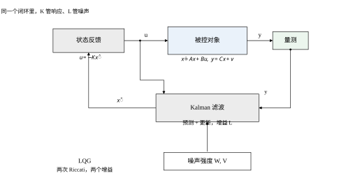
图里有一条容易看漏的线：u 同时进入对象和滤波器。这不是为了好看，而是滤波器的预测步必须知道控制器刚才做了什么——如果滤波器不知道 u，它就无法预测下一拍状态该往哪走，只能干等量测。所以 LQG 的滤波器是“有输入的观测器”，不是单纯的信号平滑器。
结构上最漂亮的结论是分离原理：把 K 与 L 分开设计，一个解 LQR 的 Riccati 方程、一个解对偶的 Riccati 方程，拼起来的四阶闭环极点恰好是两组二阶极点的并集。报告 7 实测：状态反馈极点是 -2.236068 与 -1.000000，观测器的极点是一对共轭复根 -1.8360\pm0.6090\mathrm{j}，LQG 的四个极点就是这两组数的并集，与并集的差 2.442\times10^{-15}——纯浮点噪声。这条结论让人松了一口气：不必解四阶方程，两个二阶问题分头做就行。
但同一份报告还有一句话要记住：分离原理只保证极点，不保证裕度。第55章报告 11 已经看到，LQR 单独闭环有 60^\circ 相位裕度，接上观测器之后可以掉到没有穿越。极点好看，裕度未必好看，这个坑在 §56.6 会量化。
在推公式之前，先跑一遍看看 LQG 到底得到什么。报告 8 用 T_s=0.02 s、x_0=[1,\;0]^{\mathsf T}、\hat x_0=0，K 与 L 都取标称权重，三种工况的数字是：
\begin{array}{c|cccc} \text{工况} & \text{峰值}|u| & \mathrm{RMS}(u) & 2\%\ \text{调节} & \text{末值}|x_1|\\ \hline \text{状态反馈，无过程噪声} & 0.2361 & 0.0208 & 4.520\ \mathrm{s} & 1.72\times10^{-13}\\ \text{LQG，估计从零起} & 0.4132 & 0.1155 & \text{无} & 1.6097\\ \text{LQG，初值恰好已知} & 0.4132 & 0.1166 & \text{无} & 1.6097 \end{array} \tag{56-4}
第一行是理想情形：状态全知、没有过程噪声，位移在 4.520 s 进 2\% 带，末值压到 1.72\times10^{-13}，控制量峰值恰好是 K 的第一个分量 0.2361。这一行与第55章的数字对得上，说明代码口径没错。
第二行一加噪声，性质就变了。位移再也不落 2\%，末值停在 1.6097，控制量峰值涨到 0.4132、RMS 从 0.0208 涨到 0.1155。这不是控制器失效——闭环在 W=I 下的位移稳态标准差算出来是 0.9732，与实跑末值 1.6097 同一量级。所谓“末值不归零”，就是这团被闭环不断放大的噪声撑着的：控制器每一次都用带噪的 \hat x 去算 u，噪声从 u 进对象，再从 y 回滤波器，绕一圈又变成 u 的一部分。
第三行更值得注意。把 \hat x_0 设成真值 [1,\;0]^{\mathsf T}，也就是白送滤波器一个完美的初值，末值仍是 1.6097，RMS 只从 0.1155 变成 0.1166。初值信息几十拍就被噪声冲掉了，这与报告 2 的结论一致。工程含义是：别在初值上花功夫，把功夫花在 W、V 上。
有人会问：速度不就是位移的导数吗，差分一下不就行了，何必上滤波器？这个问题的答案可以手算出来，不需要仿真。
设量测 y_k=x_1(kT_s)+v_k，v_k 方差为 V，前后两拍独立。用后向差分估速度：
\hat x_2(k)=\frac{y_k-y_{k-1}}{T_s}
分子是两个独立噪声相减，方差是 2V；除以 T_s 后方差变成
\mathrm{Var}\big[\hat x_2\big]=\frac{2V}{T_s^2}
代入本章的 V=1、T_s=0.02 s，方差是 2/0.0004=5000，标准差 70.71。也就是说，位移测得再准，差分出来的速度也带着 \pm70 m/s 量级的噪声。而本章对象的位移在 1 m 量级、时间常数 1 s 上下，真实速度也就 1 m/s 量级。信噪比是 1/70，这个“速度”完全没法用。
滤波器的速度估计标准差是 \sqrt{0.336955}=0.580478。两者相差
\frac{70.71}{0.580478}\approx121.8
倍。同一个量测序列，同样的噪声，一个误差 70，一个误差 0.58。差距不是“卡尔曼更聪明”，而是差分把噪声放大了 1/T_s 倍，而卡尔曼用模型把噪声“积掉”了——速度是位移的积分关系，滤波器知道这件事，差分不知道。
想救差分，只有两条路。第一条是把 T_s 加粗：T_s=0.1 s 时标准差降到 14.14，T_s=1 s 时降到 1.41，但采样这么慢，闭环带宽连 1 rad/s 都保不住。第二条是加低通：先滤再差分，传递函数变成 s/(1+\tau s)，在低频近似微分、高频衰减。代价是相位滞后，\tau 越大滞后越多，闭环裕度又被吃掉。两条路都撞在同一个墙上：微分是病态的，任何实现都要拿带宽换噪声，而卡尔曼把这个兑换做到了最优。
这也解释了为什么第54章的观测器要专门设一个“速度状态”：它不是在做微分，而是在用对象方程 \dot x_1=x_2 把速度“推”出来，再用位移量测去校正。推动作不放大噪声，校正动作才受噪声限制。卡尔曼做的事与观测器一样，只是把“推”与“校正”的比例算到了最优。
本章按“是什么—怎么算—怎么用—怎么坏”的顺序走，五条主线对应后面的节：
第一，最优性从哪来。§56.2 从贝叶斯递推与正交投影两条路推到同一个 Riccati 方程，并说明它与 LQR 的对偶关系——报告 1 实测对偶 CARE 的残差 1.971\times10^{-15}，L 与对偶 LQR 增益的差是 0。
第二，怎么实现。§56.3 给七步流程，§56.4 讲连续形式与稳态解，§56.5 讲离散形式。离散这一节是本章最容易踩坑的地方：报告 6 显示，把连续量测噪声直接搬进离散滤波器，L_d/T_s 会从 1.6148 一路涨到 31.2148（T_s 从 0.2 s 降到 1 ms），根本不收敛；按密度折算成 V_d=V/T_s 之后，同一列数字从 0.6273 收到 0.6717，连续解是 0.671963。
第三，性能与稳定。§56.6 给分离原理、稳态协方差、采样周期的量化影响，以及 LQG 的裕度损失。
第四，参数与调法。§56.7 用三组扫描把 W、V 的作用分开，§56.8 给新息白性检验、协方差匹配与失配诊断——报告 10 会说明，模型错一倍时位移误差几乎不动，速度误差才放大，而 E[NIS] 全在 0.99，对参数失配近乎失明。
第五，怎么改进与落地。§56.9 讲 EKF、UKF、Joseph 形式、RTS 平滑与自适应；§56.10 讲现场估噪声、定点实现、丢包处理；§56.11 收边界。
本章所有数字来自 code/ch056_sim.py 的二十三组报告，正文引用时标出报告编号；十一张图全部由 code/ch056_figs.py 生成。对象参数与第54、55章完全一致，初值统一取 x_0=[1,\;0]^{\mathsf T}，标称权重 Q=I、R=1、W=I、V=1，这一组给出的两个增益是
K=[0.236068,\;0.236068],\qquad L=[0.671963,\;-0.274233]^{\mathsf T} \tag{56-5}
后一个数是本章的主角。它的第一个分量 0.671963 大于 1，看着不像“增益”，其实很正常：L 乘的是新息（单位是位移），加到的却是状态（第一个分量是位移、第二个是速度），两个分量量纲不同，数值自然不可比。观测器的极点是一对共轭复根 -1.8360\pm0.6090\mathrm{j}，虚部只有 0.609，阻尼比 0.949，几乎贴着实轴，所以打印时只取实部会显示成两个相同的 -1.835982——报告 1 就是这么打印的，看起来像重根，实际不是。完整的极点要到 §56.4 的扫描表里才看得见。稳态协方差的迹是 1.008918、行列式是 0.151218——这几个数在后面的扫描里会反复出现，作为“标称点”的参照。
先把离散情形写出来，因为它才是代码里真正跑的东西。设第 k 拍的量测更新之前，我们手里有一个先验估计 \hat x^-_k 与它的协方差 P^-_k；量测 y_k=Cx_k+v_k 到了，要把它并进去，得到后验 \hat x^+_k、P^+_k。
贝叶斯公式说后验正比于先验乘似然。两个高斯相乘还是高斯，把指数上的二次型配平方，得到的信息形式是
(P^+_k)^{-1}=(P^-_k)^{-1}+C^{\mathsf T}V^{-1}C,\qquad \hat x^+_k=P^+_k\Big[(P^-_k)^{-1}\hat x^-_k+C^{\mathsf T}V^{-1}y_k\Big] \tag{56-6}
这两式与标量情形 (56-3) 完全同构：精度相加，均值按精度加权。但工程上没人直接这么算，因为要求两次逆。用矩阵求逆引理把它翻成协方差形式，得到的就是教科书上的四个方程：
S_k=CP^-_kC^{\mathsf T}+V,\qquad L_k=P^-_kC^{\mathsf T}S_k^{-1} \tag{56-7}
\hat x^+_k=\hat x^-_k+L_k\big(y_k-C\hat x^-_k\big),\qquad P^+_k=(I-L_kC)P^-_k \tag{56-8}
S_k 是新息的协方差，y_k-C\hat x^-_k 是新息本身。注意 S_k 是标量（单路量测），所以 S_k^{-1} 就是除法，L_k 是一个 2\times1 向量。这四式加上时间更新
\hat x^-_{k+1}=A_d\hat x^+_k+B_du_k,\qquad P^-_{k+1}=A_dP^+_kA_d^{\mathsf T}+W_d \tag{56-9}
构成完整的一拍。五个方程、一次标量除法、两次矩阵乘，计算量小到可以塞进任何一块单片机。这就是卡尔曼滤波在 1960 年代就能上阿波罗导航计算机的原因。
值得指出的是 (56-8) 第二式的一个性质：I-LC 不对称。L 是 2\times1、C 是 1\times2，乘积是 2\times2 的秩一矩阵，减去它之后剩下的矩阵一般不对称。这在数学上无所谓（P^+ 理论上仍对称），在浮点里就是误差的来源——§56.9 的 Joseph 形式正是为了消掉这个不对称。
(56-7) 与 (56-8) 里的 L 不是猜的，是把后验协方差的迹对 L 求极小解出来的。设 L 是任意 2\times1 向量，估计写成 \hat x^+=\hat x^-+L(y-C\hat x^-)，误差是
e^+=\hat x^+-x=(I-LC)e^-+Lv \tag{56-10}
两边取外积再取期望，交叉项因 e^- 与 v 不相关而消失：
P^+=(I-LC)P^-(I-LC)^{\mathsf T}+LVL^{\mathsf T} \tag{56-11}
这个式子的结构很清楚：第一项是“没被量测纠正掉的那部分先验误差”，第二项是“量测噪声经过增益灌进来的那部分”。L 小，第二项小、第一项大；L 大，反过来。把 (56-11) 展开成 L 的二次型：
P^+=P^--LC P^--P^-C^{\mathsf T}L^{\mathsf T}+L\big(CP^-C^{\mathsf T}+V\big)L^{\mathsf T} \tag{56-12}
中间那个括号正是 S。对 L 求导并令其为零，得 L S=P^-C^{\mathsf T}，即 L=P^-C^{\mathsf T}S^{-1}——这就是 (56-7) 第二式。把它代回去，二次型配方成
P^+=P^--P^-C^{\mathsf T}S^{-1}CP^-=(I-LC)P^- \tag{56-13}
后验协方差一定不大于先验：P^+\preceq P^-，量测只会带来信息，不会带来损失。这句话在标量情形就是 P^+\le P^-，与报告 17 的“降幅”那一列对应。
这里有一个容易误解的地方。L 让 \mathrm{tr}(P^+) 最小，但它并不让 \mathrm{tr}(P^+) 变成零——量测噪声 V 堵在那里，再好的增益也压不穿。报告 16 给了一个具体数字：两路传感器融合后 \sqrt{\Sigma_{11}}=0.795644，比单路的 0.819734 只好 2.9\%。原因是过程噪声 W 在中间托底：每一拍都有新的不确定度灌进来，滤波器只能把它压到某个平衡点，不可能压到零。
(56-8) 与 (56-9) 里有一个非常特殊的性质：协方差递推里没有 y，也没有 \hat x。 P^-、P^+、L 只由 A_d、C、W_d、V 决定，与实测数据无关。这意味着三件事。
第一，增益序列可以离线算好，存成表，在线只做乘加。飞行器的导航滤波器常这么干，因为在线算 Riccati 递推要开方、要除法，定点机上很贵。
第二，收敛性与初值 P_0 无关，只与“系统是否可检测、是否可 stabilizable”有关。报告 2 把 P_0 从 10^{-6}I 扫到 10^{6}I，稳态迹全部是 0.322950，收敛步数 33 到 64。这条性质叫“滤波器的指数遗忘”，它保证了冷启动不会留下永久偏差。
第三，滤波器“自评的协方差”与“实际的误差”是两回事。P 只在模型与噪声假设全对时才等于真实的均方误差。报告 10 会看到，模型刚度错一倍时，滤波器自评的新息方差仍是 1.0681，E[NIS] 仍是 0.99，可速度误差已经从 0.4201 涨到 0.6030。P 是滤波器对自己的信心，不是客观精度。
时间趋于无穷时 P^-_k 收敛到一个常数阵 \Sigma，把它代进 (56-9) 与 (56-13) 的复合式，得到离散代数 Riccati 方程（DARE）。连续时间下的对应物更简洁：
A\Sigma+\Sigma A^{\mathsf T}-\Sigma C^{\mathsf T}V^{-1}C\Sigma+W=0, \qquad L=\Sigma C^{\mathsf T}V^{-1} \tag{56-14}
报告 1 解出的是
\Sigma=\begin{bmatrix}0.671963&-0.274233\\-0.274233&0.336955\end{bmatrix}, \qquad L=\begin{bmatrix}0.671963\\-0.274233\end{bmatrix} \tag{56-15}
代回 (56-14) 的残差是 1.971\times10^{-15}，机器精度。\Sigma 的迹是 1.008918、行列式是 0.151218，两个特征值都是正的，半正定性没问题。观测器的极点是一对共轭复根 -1.8360\pm0.6090\mathrm{j}，虚部 0.609 相对实部不到三分之一，阻尼比 0.949，衰减快、几乎不振荡。这一点在 V 与 W 的扫描里会变（§56.7）：V=0.001 时裂成一快一慢两个实根，V=100 时又并回两个实根，只有中间几档才是复根。
(56-14) 与 LQR 的 CARE 长得几乎一样，这不是巧合。把 A 换成 A^{\mathsf T}、C^{\mathsf T} 换成 B、W 换成 Q、V 换成 R，两式逐项对应。这个对应关系有个名字，叫对偶性。
把两个 Riccati 方程并排写：
\begin{array}{ll} \text{LQR：} & A^{\mathsf T}P+PA-PBR^{-1}B^{\mathsf T}P+Q=0,\quad K=R^{-1}B^{\mathsf T}P\\[2pt] \text{KF：} & A\Sigma+\Sigma A^{\mathsf T}-\Sigma C^{\mathsf T}V^{-1}C\Sigma+W=0,\quad L=\Sigma C^{\mathsf T}V^{-1} \end{array} \tag{56-16}
只要把 (A,B,Q,R) 替换成 (A^{\mathsf T},C^{\mathsf T},W,V)，第一个方程就变成第二个，K^{\mathsf T} 变成 L。报告 1 直接验证了这一点：用对偶参数调 LQR 求解器，得到的增益与 L 的转置之差的打印值是 0.000\times10^{0}，一位不差。
这条对偶性的实用价值在于：只需要一个好用的 Riccati 求解器，就能同时做控制器和滤波器。 本章的代码就是这么写的——lqr_gain 一个函数，kf_ss 只是把矩阵转置一下再调它。第57章讲 H_2 与 H_\infty 时，同一个套路还会再出现一次。理论价值则在于：LQR 的所有结论（稳定性、增益裕度、单调性）都能“转置”成滤波器的结论，包括哪些结论在什么条件下才成立。
分离原理的证明只需要一个式子。设真实闭环的代价是
J=\mathbb{E}\int_0^\infty\big(x^{\mathsf T}Qx+u^{\mathsf T}Ru\big)\,dt, \qquad u=-K\hat x \tag{56-17}
把 x=\hat x+e 代进去，展开成三项：\hat x 的项、e 的项、交叉项 2\hat x^{\mathsf T}Qe。交叉项的期望是零，因为卡尔曼滤波的估计误差与估计本身正交——这正是 §56.2.2 里“新息与已有信息正交”的另一面。于是
J=\mathbb{E}\int_0^\infty\big(\hat x^{\mathsf T}Q\hat x+u^{\mathsf T}Ru\big)\,dt +\mathbb{E}\int_0^\infty e^{\mathsf T}Qe\,dt \tag{56-18}
第一项只含 K（因为 \hat x 由 K 驱动），第二项只含 L（因为 e 的协方差由滤波器决定）。两项可以分别最小化，互不干涉。这就是分离原理的全部内容，也叫确定性等价：把估计值当成真值去设计控制器，得到的就是随机意义下的最优控制器。
分离原理有严格的适用条件，值得说清：代价必须是二次型，噪声必须是高斯，约束必须线性，而且没有对 u 的幅值限制。四个条件破一个，分离原理就不再成立。执行器饱和是最常见的破法——饱和是非线性的，估计误差会通过饱和边界影响控制效果，此时“把估计当真值”可能让闭环失稳。第55章 §55.10 讨论过饱和下的退化，那里还只是状态全知的情形；加上估计误差之后会更糟。
即使四个条件都满足，分离原理给的也只是“极点分开”。报告 7 的四个极点 -2.236068、-1.8360\pm0.6090\mathrm{j}、-1.000000 与并集的差 2.442\times10^{-15}，说明极点确实拼得严丝合缝。但极点不等于裕度，也不等于时域指标——§56.6 会用数字说明，同一个 LQG 闭环，状态反馈的 2\% 调节是 4.520 s，接上滤波器后连 2\% 都进不去。分离原理保证的是“最优”，不是“好用”。
把估计问题放到内积空间里看，会得到一幅更清楚的图。定义内积 \langle a,b\rangle=\mathbb{E}[ab^{\mathsf T}]，把“用前 k 拍量测能张成的所有线性组合”记作 \mathcal{Y}_k。最优估计就是 x_k 在 \mathcal{Y}_k 上的正交投影。
投影有一个几何性质：残差与子空间正交。这里的残差就是估计误差 e_k=x_k-\hat x_k，于是
\mathbb{E}\big[e_k\,y_j^{\mathsf T}\big]=0,\qquad j\le k \tag{56-18a}
这条正交性等价于“估计里再没有可被量测解释的部分了”，再多用一点量测也压不下去。
新息是 \nu_k=y_k-C\hat x^-_k，其中 \hat x^-_k 只用到 k-1 及以前的量测。对 j<k，
\mathbb{E}\big[\nu_k\,y_j^{\mathsf T}\big] =C\,\mathbb{E}\big[e^-_k y_j^{\mathsf T}\big]=0 \tag{56-18b}
第一项里 \mathbb{E}[y_k y_j^{\mathsf T}] 因为噪声独立也为零（j<k），第二项由 (56-18a) 为零。所以新息与全部历史量测正交，而新息序列本身又是“历史量测的线性组合减去预测”，于是它对自身过去也正交——白。这就是 §56.8 用自相关检验滤波器的理论依据：不是经验规则，是正交性的直接推论。
同一件事换个说法：新息是量测里“真正新”的那部分，它不能被任何历史量测预测。滤波器每一拍做的就是把这部分新信息按 L 的比例吸收进来。若新息还有相关性，说明上一拍有信息没被吸收干净，增益偏小；若新息方差比 S 大，说明增益偏小或噪声模型偏小。
正交性还有两个推论值得记住。
第一，卡尔曼滤波在高斯假设下是最小均方误差估计，在非高斯假设下仍是最优线性估计（BLUE）。两者差别在于：非高斯时可能存在更好的非线性估计，但所有线性估计里卡尔曼最好。这解释了为什么噪声非高斯时滤波器仍然“能用”——它不是最优了，但没有更好的一阶替代。
第二，分离原理里那个“交叉项为零”（§56.2.6）不是额外的假设，就是 (56-18a)。估计误差与估计本身正交，所以代价函数里的 2\hat x^{\mathsf T}Qe 期望为零，K 与 L 才能分开优化。反过来，一旦正交性破了（比如模型失配、或者用了非最优的次优增益），交叉项不再为零，分离原理也就只剩“极点拼起来”这个弱形式。
有人会担心：P^-_k 每拍都在变，L_k 也在变，这会不会导致增益一直在动、闭环行为不稳定？答案是不会，原因在 (56-9) 与 (56-13) 的结构：这是一个确定性递推，且是一个“压缩映射”。
把两式复合，写成 P^-_{k+1}=f(P^-_k)。可以证明 f 在正定锥上单调（P\preceq Q\Rightarrow f(P)\preceq f(Q)）且非扩张，于是从任何正定初值出发都收敛到唯一不动点，就是 DARE 的解。报告 2 的实测正是这个结论的数值版本：10^{-6}I 与 10^{6}I 两个极端初值，收敛步数 33 与 64，终点都是 0.322950。
收敛速度由观测器极点决定。本章观测器的实部是 -1.836，离散化后模为 0.9640，每拍把初值的影响乘 0.964，二十拍衰减到 0.48，六十拍衰减到 0.11。这与报告 2 的 33 到 64 步对得上。若观测器做到 -50，离散极点的模是 0.368，十拍就衰减到 10^{-5}，收敛更快；反之，若 V 很大、观测器很慢，收敛可能要几百拍。
工程含义：增益的“预热时间”由观测器带宽决定，不由初值决定。 若系统要求上电后 0.1 s 内就进入稳态，而观测器带宽只有 2 rad/s，那无论 P_0 给多大都做不到。这时要么接受一段预热期（期间用固定增益或开环），要么把 V 估小、把观测器做快。
标量算例（报告 17）里藏着一条恒等式：1/P^+=1/P^-+1/V，后验精度等于先验精度加量测精度。把它写成矩阵，就得到另一种滤波器。令信息矩阵 Y=P^{-1}、信息向量 \hat y=Y\hat x，量测更新变成
Y^+=Y^-+C^{\mathsf T}V^{-1}C,\qquad \hat y^+=\hat y^-+C^{\mathsf T}V^{-1}y \tag{56-18c}
右边没有逆，只有加法。这在多传感器时特别顺手：两路量测各贡献一项 C_j^{\mathsf T}V_j^{-1}C_j，加起来就是融合结果。报告 16 的数字可以当场验：两路 V=1 与 V=4，信息量 1+0.25=1.25，等效噪声 1/1.25=0.8——与报告里“折成一路、噪声 0.8”那一行完全对上，融合后的 \sqrt{\Sigma_{11}} 都是 0.795644。§56.7 讲融合时会回到这一点。
代价在预测步。协方差形式的预测是两次矩阵乘 A_dP^+A_d^{\mathsf T}+W_d，信息形式要写成 Y^-=(A_dY^{+-1}A_d^{\mathsf T}+W_d)^{-1}，多两次求逆。所以选型有一条简单判据：量测多、预测少（组合导航、静态参数辨识、多站定位）用信息形式；量测少、预测多（伺服、飞行控制）用协方差形式。 两者数学上等价，差别只在运算量压在哪一步。
信息形式还有一个数值上的好处：初值“什么都不知道”对应 Y_0=0，一个干净的全零矩阵；协方差形式只能用 P_0=10^6I 这样的巨大数去近似无穷。报告 2 里 10^6I 与 10^{-6}I 的收敛步数差了将近一倍（64 对 33），根源就是这个“用大数表示无穷”的做法。
协方差递推与量测无关（§56.2.3），这条性质有一个很实用的推论：整条增益序列可以离线算好，在线只查表。
报告 2 给出了表要多长：从 10^6I 起步，64 步收敛到稳态；从 10^{-6}I 起步，33 步。取 64 步保守一点，再加几拍余量，存 80 组 L（每组两个数）就够了。T_s=0.02 s 时，64 拍是 1.28 s——也就是说上电一秒多之后，增益就是常数了。
这个做法在嵌入式里极常见，因为它把在线计算压到最小：预测两步乘加、更新两步乘加，没有矩阵求逆、没有 Riccati。代价是三条前提必须成立：对象是定常的、T_s 不变、W 与 V 不随工况变。任何一条破了，表就不对。
三条前提里最容易破的是第三条。工况变了（负载变、温度变），W 实际会变；这时表里的增益偏保守或偏激进，而滤波器自己不知道。补救是“分段查表”：按工况把 W/V 分成几档，每档一张表，用一个可测的工况量（转速、负载电流）去选表。这就是增益调度的雏形，第55章讨论 LQR 的调度时用的是同一套思路。
还有一条边界：表里的增益只在“P 已经收敛”的意义上最优；若 P_0 与表里的初值不一致（比如重启时状态未知），前几拍的估计会偏，但闭环仍稳定——因为每一拍的 A_d-L_kC 都是稳定的。这一点与“用错增益”完全不同，后者可能直接失稳。
从对象方程到能上机的 LQG，中间有七步。这七步的顺序不能乱，尤其第二步与第三步，顺序反了会得到一套自洽但错误的增益。
第一步，写连续模型。 拿到 A、B、C，并明确哪个状态可测。本章的 C=[1,\;0] 表示只测位移。这一步还要给噪声定性：过程噪声从哪来（风、摩擦、未建模的高频模态），量测噪声从哪来（传感器本底、量化、传输）。来源决定 W 与 V 的量纲，量纲错了后面全错。
第二步，估噪声强度。 V 好估：传感器静止时采一段数据，算样本方差。W 难估：它代表“模型没说清的部分”，只能靠试或靠新息反推（§56.8 的协方差匹配）。本章取 W=I、V=1，是一组无量纲化的标称值，不对应任何具体物理单位。
第三步，离散化。 由 A、B 算 A_d=e^{AT_s}、B_d=\int_0^{T_s}e^{A\tau}B\,d\tau；由 W 算 W_d=\int_0^{T_s}e^{A\tau}We^{A^{\mathsf T}\tau}d\tau；而 V_d 要按密度折算成 V/T_s。第三步是本章最容易出错的一步，报告 6 的教训在 §56.5 展开。一个粗略的判断：若 T_s 比对象最快时间常数小一个数量级以上，A_d\approx I+AT_s、B_d\approx BT_s、W_d\approx WT_s 就够用；否则必须用矩阵指数。
第四步，解 Riccati。 离散解 DARE，连续解 CARE (56-14)。解完必须验残差，量级应在 10^{-12} 以下。报告 1 的残差是 1.971\times10^{-15}。若残差大，多半是 W 或 V 让方程变得病态（例如 V 小到 10^{-12}），先把量纲统一再解。
第五步，检查可检测性。 滤波器能收敛的前提是“不能观的模态本身是稳定的”。本章对象开环极点 -1、-2，都稳定，所以即使 C 只测位移，滤波器也一定收敛。若对象有右半平面极点且该模态不能观测，Riccati 方程无正定解，任何增益都救不回来。
第六步，配 LQR。 解另一个 Riccati 得 K。注意这一步与滤波器完全独立，可以并行做，也可以先做。做完用分离原理验一遍极点：把 A-BK 与 A-LC 的特征值拼起来，应与四阶闭环的特征值一致（差在 10^{-12} 量级）。
第七步，闭环联调。 这一步最容易忽略。滤波器与控制器各自最优，拼起来未必好用：报告 8 的状态反馈 2\% 调节是 4.520 s，接上滤波器后位移再也不落 2\%。联调要看三样东西：控制量峰值是否超执行器上限、估计误差是否与自评协方差同量级、新息是否白。三样都过，才算能上机。
图 56-2 把一拍之内的动作摊开。左上是先验，右上是量测更新，右下是后验，左下是预测。四个框转一圈就是一拍，箭头方向固定，不能省任何一步。
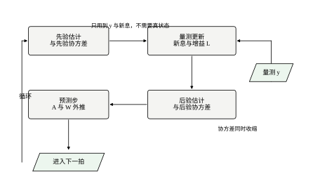
图里有两个细节值得停一下。第一，量测 y 只进入“量测更新”这一个框，不进入预测框；预测框的输入只有上一拍的后验与这一拍的控制量 u。这意味着即使量测断了，滤波器仍能靠模型往前推——推得准不准另说，但不会停摆。这一点在 §56.10 讲丢包时会用到：丢一半量测，位移误差只从 0.3532 涨到 0.4474，多 27\%，不是翻倍，原因就是预测步在托底。
第二，“后验”与“预测”之间必须有一次矩阵乘 A_dP^+A_d^{\mathsf T}。这一步在定点实现里是精度损失的主要来源，因为 A_d 的元素可能大于 1（本章 A_d 的最大元素约 0.98，还好；若对象有快模态，A_d 的元素会到几十），乘两次之后动态范围被拉得很开。
把标称参数代进七步，看每一环给出什么。
第一步：A=\begin{bmatrix}0&1\\-2&-3\end{bmatrix}，B=[0,\;1]^{\mathsf T}，C=[1,\;0]。开环极点 -1、-2，阻尼比约 0.53，欠阻尼但稳定。
第二步：W=I、V=1。这两个数的物理含义在 §56.7 会展开，此处只当作标称。
第三步：T_s=0.02 s。A_d 的两个特征值是 e^{-0.02}\approx0.980199 与 e^{-0.04}\approx0.960789，与连续极点对应。W_d 由 (56-24) 的积分算出，量级约 0.02——与 WT_s 同阶，说明 T_s 足够小。
第四步：解 DARE，得稳态先验协方差，其迹是 0.322950（报告 2 的稳态值）。这一步的连续版本给出 \mathrm{tr}(\Sigma)=1.008918，两个数不同是因为一个是一拍的先验、一个是连续时间的稳态，口径不同，不必对齐。
第五步：可检测性通过。观测器极点的模在离散域是 e^{-1.835982\times0.02}\approx0.9640，在单位圆内。
第六步：LQR 给出 K=[0.236068,\;0.236068]，闭环极点 -2.236068、-1.000000。与第五步的观测器极点拼起来，就是 LQG 的四阶极点。
第七步：闭环联调。这一步的数字在报告 8：峰值 |u|=0.4132、RMS 0.1155、末值 1.6097。如果执行器上限只有 0.3 N，这套参数就不能用，得把 R 调大（让控制器更“省”，见第55章 §55.8 的 Bryson 规则）。
实际工程里，七步走完不等于对。下面三张表是我在项目里反复用的，能拦住大部分低级错误。
表一：量纲。 W 的单位是“状态平方每秒”，V 的单位是“量测平方”，W_d 的单位是“状态平方每拍”，V_d 的单位是“量测平方每拍”。四个量的单位两两不同，混用一定出问题。检验办法：把 T_s 改成一半，若 W_d 与 V_d 都跟着减半，量纲就是对的；若其中一个不变，说明它被当成了密度而不是每拍量。
表二：可检测性。 用 PBH 判据扫一遍：对每个不稳定特征值 \lambda，检查 \begin{bmatrix}\lambda I-A\\C\end{bmatrix} 是否满秩。本章对象没有不稳定极点，这一条自动过。若对象含积分器（比如位置控制里的电机），这一条必须逐项验。
表三：新息统计。 稳态后取一段新息，算 E[NIS] 与一阶自相关。假设全对时 E[NIS] 应接近 1、自相关接近 0。报告 9 的实测是 0.9773 与 -0.0121，符合。若 E[NIS] 远大于 1（如 16.68），说明滤波器低估了不确定性；若远小于 1（如 0.271），说明高估了。表三只能查“自洽”，查不出“模型对不对”——这一点 §56.8 会用报告 10 说明。
第一个错误是把连续 V 直接搬进离散滤波器。报告 6 的数字很刺眼：T_s=0.2 s 时 L_d/T_s=1.6148，T_s=0.001 s 时涨到 31.2148。同一个物理问题，采样快一千倍，等效增益反而大二十倍，这不是数值问题，是口径问题。正确的做法是 V_d=V/T_s，折算后 L_d/T_s 从 0.6273 收到 0.6717，向连续解 0.671963 靠拢。
第二个错误是把 W 当成“每拍方差”。连续白噪声的强度是谱密度，采样越密，每一拍分到的过程噪声越小，所以 W_d\approx WT_s 而不是 W。这两个折算方向相反：V 要除以 T_s，W 要乘以 T_s。记不住的时候想一件事——采样越快，量测越多（所以每拍的 V 该变小），而两次采样之间对象漂移得越少（所以每拍的 W 也该变小）。前者对应 V/T_s，后者对应 WT_s。
报告 20 把全章的口径集中列了一遍，其中三行最要紧：u=-K\hat x 与第55章同号；\hat x^+=\hat x^-+L(y-C\hat x^-) 与第54章同号；\Sigma 指稳态先验协方差，\Sigma^+ 指后验。口径不一致是跨章对比失败的头号原因，写代码之前先把这三行对齐。
本章从头到尾用 W=I、V=1，这两个“1”不是偷懒，是做过无量纲化的结果。位移的单位是 m、速度是 m/s，两个状态量纲不同；连续噪声强度 W 的单位是“状态平方每秒”，所以 W_{11} 是 \mathrm{m^2/s}、W_{22} 是 \mathrm{m^2/s^3}，本来就该是两个不同的数。
取特征尺度：位移 1 m、速度 1 m/s、时间 1 s。代进去，W_{11}=1 读作“位移在 1 s 内的随机漂移标准差约 1 m”，W_{22}=1 读作“速度在 1 s 内被扰动改变约 1 m/s”。对照对象本身的参数（k=2、c=3），这是一台被扰得不轻的机器——过程噪声与恢复力同量级。这不是“标准值”，是“这台机器在这个尺度下的值”。
无量纲化的好处可以直接用报告 5 的结论说明。改单位（比如把长度换成 mm）等于把 W 与 V 同时乘同一个 \beta=10^6；报告 5 实测这种同乘不改变 L、只把 \Sigma 乘 \beta（误差 4.44\times10^{-16}）。所以换单位不改变闭环行为，这是物理上必须成立的，也顺带验证了代码没错。反过来说，L 的数值必须带着单位读：0.671963 这个“每秒”的增益换成 mm 制还是 0.671963，但它作用的量已经是 mm 了。
真正要小心的是“只改一个”。把速度单位换成 mm/s 而位移仍用 m，等于只给 W_{22} 乘 10^6，这时 L 会变，闭环也会变——变的不是物理，是你的模型。§56.7 会把这条写成“单独缩放”的量化结论（两个指数和为 1）。
七步是正向的，工程上还需要一条反向的检查路径：手上只有结果（增益、极点、新息），能不能倒推出设计对不对。四条都做一遍，比正向再算一遍更有用。
第一，从新息倒推 V。稳态新息的样本方差应该等于 C\Sigma^-C^{\mathsf T}+V。报告 11 用这条反估：真实 V=2.00 时反估 1.9751（-1.2\%），真实 V=4.00 时反估 3.9917（-0.2\%）。若反估值与设定值差一个量级，说明 V 设错了，或者 W 把差额吸收了（报告 11 的注脚正是这句）。
第二，从观测器极点倒推 W/V。报告 3 与报告 4 是同一张表的两半：V 缩小 100 倍与 W 放大 100 倍给出完全相同的 L=[9.975821,\;-0.241503] 与完全相同的极点。所以看到一组极点，只能定出比值，定不出绝对值——绝对值要靠 \Sigma 的大小去定（报告 4 里 W 乘 100，\sqrt{\Sigma_{11}} 正好乘 10）。
第三，从闭环极点查配对。把 A-BK 与 A-LC 的极点拼起来，应当等于四阶闭环的极点（报告 7，差 2.442\times10^{-15}）。对不上就是符号或转置错了，与参数无关。
第四，从控制量峰值查 R。报告 8 的含噪峰值 0.4132 是无噪声确定性峰值 0.2361 的 1.75 倍。如果执行器上限刚好卡在 0.24，那设计在纸面上“最优”，一上电就饱和。这条检查必须在仿真里做，不能靠算——峰值是噪声与初值响应的叠加，解析式给不出来。
正向的七步是“给定参数算结果”，实际项目常常反过来：给定指标，找参数。三条约束要一起满足。
第一条，观测器带宽。 需求通常是“估计要跟上对象最快的模态”。本章对象最快极点 2 rad/s，观测器至少要不慢于它。查报告 3 与报告 4 的表：W/V=1 给最慢极点 1.836，10 给 2.97，100 给 3.26。所以“观测器不慢于 2”对应 W/V 在 1 附近，“快一倍”对应 10 到 100。这张表就是反查表，不用重新解方程。
第二条，噪声放大。 观测器快了，L 就大，量测噪声被放大地灌进控制量。报告 8 的含噪控制量峰值 0.4132 是在 W/V=1 下测的；若把 W/V 提到 100，L_1 从 0.672 涨到 9.976，可以预期控制量峰值也会成倍上升。所以在定 W/V 之前，先把执行器行程与量测噪声摆在一起估一下：|L|\cdot\sqrt{V} 大致就是噪声在控制量上的贡献，它不该超过行程的十分之一。
第三条，闭环响应。 这一条由 Q/R 决定，与滤波器无关。本章 Q=I、R=1 给 2.236 与 1.000，2\% 调节 4.520 s（无噪声）。若要求 2 s，得把 Q 加大或 R 减小，具体在报告的哪一档要看第55章的扫描。
三条约束经常互相冲突：要快就要大增益，大增益就放大噪声，压噪声就得慢。工程上的做法是先满足第二条（硬件是硬的），再在剩下的空间里挑第一与第三条。冲突到无解时，说明该换传感器或换执行器了，不是算法能解决的。
一套参数算完，至少要跑五种工况，每种看一个特定的东西。这五种工况与本章的二十三组报告是对应的，可以直接照抄设置。
工况一，无噪声确定性响应。 关掉 W 与 V，初值 x_0=[1,0]、\hat x_0=x_0。看两件事：闭环极点是否与 A-BK 一致，2\% 调节时间是否为 4.520 s。这一条验的是 K 与离散化，不涉及滤波器。
工况二，标称含噪。 W=I、V=1、\hat x_0=0，跑 30 s。看峰值 |u|=0.4132、RMS(u)=0.1155、末值 1.6097、估计 RMS 0.7084。这一条验的是整体，也是“能不能上机”的主要依据。
工况三，初值错。 P_0 从 10^{-6}I 扫到 10^{6}I，看稳态是否都收到 0.322950、收敛步数是否在 33 到 64 之间。这一条验的是递推实现的冷启动，若某个初值下不收敛，多半是数值问题（负方差、矩阵不正定）。
工况四，模型失配。 把真实刚度从 1.0 扫到 4.0（滤波器仍按 k=2 建模），看速度误差是否在 k=2 处最小（0.4201）、两端是否升到 0.5522 与 0.6030。这一条验的是“没测的那个状态有多脆”。
工况五，丢包与延迟。 按 20\%、50\%、80\% 三种丢包率各跑一遍，看位移误差是否落在 0.3794、0.4474、0.6037。这一条验的是通信异常下的退化程度，也是决定“要不要做延迟补偿”的依据。
五种都过，只能说“在这套仿真里能跑”。真实系统还要加两条本章覆盖不到的：执行器真实特性（死区、摩擦、带宽）与传感器真实特性（量化、温漂、安装偏差）。这两条只能上台上验。
连续时间下，滤波器的形式比离散更干净：没有“先验/后验”的分别，只有一个微分方程
\dot{\hat x}=A\hat x+Bu+L\big(y-C\hat x\big),\qquad L=\Sigma V^{-1}C^{\mathsf T} \tag{56-19}
这就是第54章 Luenberger 观测器的形状，区别只在 L 不再由极点配置给出，而由 \Sigma 算出。\Sigma 满足 Riccati 微分方程
\dot\Sigma=A\Sigma+\Sigma A^{\mathsf T}+W-\Sigma C^{\mathsf T}V^{-1}C\Sigma \tag{56-20}
初始条件 \Sigma(0)=P_0。(56-20) 在 t\to\infty 时收敛到代数方程 (56-14) 的解，报告 1 的 \Sigma 就是那个稳态：
\Sigma=\begin{bmatrix}0.671963&-0.274233\\-0.274233&0.336955\end{bmatrix} \tag{56-21}
这个矩阵的两个特征值是 0.8258 与 0.1831，都为正。它们决定误差椭圆的轴长：位移方向的标准差 \sqrt{0.671963}=0.819734，速度方向是 \sqrt{0.336955}=0.580478，两者的相关系数是 -0.274233/\sqrt{0.671963\times0.336955}=-0.5757。也就是说，位移估高了的时候，速度多半估低了——这是对象本身的耦合（\dot x_1=x_2）在协方差上的投影，不是滤波器的问题。
一个容易被忽略的差别：连续增益 L 的单位是 1/\mathrm{s}，离散增益 L_d 是无量纲的。原因在 (56-19)：\dot{\hat x} 是“每秒的状态”，要把它拉向新息，L 必须带 1/\mathrm{s}。离散式 \hat x^+=\hat x^-+L_d(y-C\hat x^-) 两边都是状态，L_d 自然无量纲。
这个差别解释了两件事。第一，为什么报告 6 要盯着 L_d/T_s 看：只有把离散增益除以采样周期，才能与连续增益比。第二，为什么 T_s\to0 时 L_d\to0：一拍的修正量正比于 T_s，所以增益本身必须趋于零，否则采样越密修正越猛，滤波器会过冲。报告 6 的折算列正是这个意思：L_d 从 0.12546 一路掉到 0.00067，L_d/T_s 却稳定在 0.63 到 0.67 之间。
图 56-3 画的是协方差椭圆从 P_0=10^4I 收缩到稳态的过程。横轴是位移、纵轴是速度，每条线是二倍标准差椭圆，共画了四个时刻：起步、3 拍、25 拍、200 拍，最后是稳态（红色虚线）。
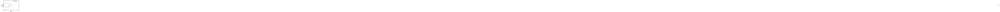
起步时椭圆极大，几乎盖住整个画面——P_0=10^4I 意味着滤波器对初始状态一无所知，标准差 100。3 拍之后缩了一大截，25 拍已经接近稳态，200 拍与稳态线基本重合。收缩的方向不是各向同性的：位移方向先被压下去（因为 y 直接测位移），速度方向要慢一些（只能靠模型与位移的耦合推）。最终椭圆是斜的，斜率约 -0.576，与上一小节的相关系数对应。
这张图还说明了报告 2 的结论为什么成立：初值差十二个数量级，收敛的终点是同一个椭圆。滤波器有“遗忘”能力——每一拍都有 W_d 灌进来，早期信息被不断稀释，所以 P_0 的影响按几何级数衰减。衰减的快慢由观测器极点决定，本章实部是 -1.836，时间常数约 0.545 s，二十几拍（T_s=0.02）就衰减到可以忽略。
报告 3 扫了 V，观测器极点的变化很值得看：
\begin{array}{c|c} V & \text{观测器极点}\\ \hline 0.001 & -31.5428,\;-3.1709\\ 0.01 & -9.7139,\;-3.2619\\ 0.1 & -2.9747\pm1.1615\mathrm{j}\\ 1 & -1.8360\pm0.6090\mathrm{j}\\ 10 & -1.9431,\;-1.1508\\ 100 & -1.9949,\;-1.0150 \end{array} \tag{56-22}
两端的形态完全不同。V=0.001（传感器极准）时两个实极点分得很开：一个 -31.5，一个 -3.2。快的那个负责“抓住量测”，慢的那个负责“外推速度”，分工明确。V=1 时两个极点合成一对共轭复根 -1.8360\pm0.6090\mathrm{j}，阻尼比约 0.949，几乎不振荡。V=100（传感器很烂）时又并回两个实根，但都挤在 -1 到 -2 之间，因为此时滤波器几乎不信量测，观测器退化成了“模型的复制品”，极点接近开环的 -1 与 -2。
这条走向有一个工程含义：观测器的最快极点由 V 决定，而 V 由传感器决定，不由你决定。 想把观测器做快，唯一的办法是把 V 估小（换更好的传感器，或把滤波做好），而不是在复平面上摆极点。这一点与第54章的极点配置形成鲜明对照：那里你可以把极点放到 -100，代价是量测噪声被放大一百倍；这里极点是“算出来的”，噪声放大与响应速度的兑换已经被 Riccati 方程自动做完了。
用 (56-19) 与 (56-20) 之前，要接受两个不太物理的假设。
第一，白噪声的方差是无穷大。连续白噪声在任何有限带宽内的能量都有限，但总方差 \int\delta(0)dt 发散。真实扰动总有带宽上限，把它近似成白噪声，等于假设“带宽远高于闭环带宽”。这个近似在闭环带宽的十倍以上通常没问题；若扰动本身就在闭环带宽附近（比如海浪对船、阵风对飞机），白噪声模型会低估低频能量，滤波器会过度自信。
第二，量测是连续的。真实传感器有采样、有保持、有延迟。把离散量测塞进连续滤波器，等于假设“两拍之间量测不变”，这会引入一个等效的相位滞后 T_s/2。T_s=0.02 s 时滞后 0.01 s，对带宽 2 rad/s 的闭环可以忽略；对带宽 100 rad/s 的闭环就是 57^\circ 的相位损失，足以吃掉全部裕度。
两个假设都指向同一件事：连续情形是“数学上的极限”，真正上机要落到离散。§56.5 就是把这两条假设拆开，换成可以实现的差分方程。
(56-19) 是一个微分方程，理论上可以直接用数值积分跑到控制板上。做法是把修正项按采样周期累加：
\hat x^+=\hat x^-+L_c\,T_s\,(y-C\hat x^-) \tag{56-19a}
也就是“每拍只修正 L_cT_s 那么多”。这条式子的增益是 0.671963\times0.02=0.0134393，与报告 6 折算列的 0.01335 只差 0.66\%；而如果按 V_d=V 去解离散 Riccati，得到的是 0.13045——整整大十倍。两组数字放在一起说明一件事：“连续增益乘采样周期”与“折算后的离散解”是同一件事的两种算法，而“直接搬 V”不是。
既然如此，为什么还要解离散方程？因为 (56-22b) 只对一阶精度成立。它的误差是 O(T_s^2)：T_s=0.02 时 0.66\% 可以接受，T_s=0.2 时就涨到 7\% 以上（报告 6 里 L_d/T_s=0.6273 对 0.671963，差 6.6\%）。要压住误差就得减小步长，而减小步长意味着控制周期变短、计算量上升——不如一开始就解离散方程。
另一条路是给 Riccati 微分方程 (56-20) 做离线积分，用四阶 Runge–Kutta 从 P_0 积到稳态，得到的就是 \Sigma。这条路只在“想画收敛过程”时才需要（图 56-3 的椭圆序列就是积分出来的）；稳态值直接解代数方程更快、更准。
连续解的用处不是“直接用”，而是当基准。它不含 T_s，所以是这套噪声假设下滤波器的物理上限：观测器能多快、稳态标准差多大、增益多大，都在这里定死。
有了基准，采样周期的选法就有依据了：要求 T_s 乘上最快的观测器极点不超过 0.1 到 0.2。本章最快极点 1.836 rad/s，T_s 可以放到 0.05 到 0.1 s；报告 15 的实测正好卡在这条线上——T_s=0.1 s 时 \mathrm{tr}(\Sigma_d) 偏 2.7\%、L_d/T_s 偏 -3.3\%，还可以用；T_s=0.3 s 时偏到 8.2\% 与 -9.9\%，已经开始明显吃亏。
这条规则换到高带宽场合立刻变严。若设计要求观测器做到 -50，T_s 必须小于 0.002 到 0.004 s，也就是 250 Hz 以上的采样率。很多“滤波器效果不好”的现场问题，根子不在 W、V，而在采样率撑不住观测器带宽：连续解算出来是好的，离散实现被 T_s 拖垮了。
“连续解是采样无关的基准”这句话有前提，两种情形下它会骗人。
第一种，闭环带宽逼近采样频率。 连续模型假设量测连续；离散实现里两拍之间量测不变，等效相位滞后 T_s/2，相位损失约 \omega T_s/2 弧度。本章 \omega=2 rad/s、T_s=0.02 s，乘积是 0.04，只有 1.1^\circ，可以忽略；§56.4.5 算过 \omega=100 rad/s 时会吃掉 57^\circ。所以基准只在 \omega T_s\ll1 时有意义。
第二种，量测噪声不是白的。 连续模型假设 V 是“每赫兹的方差”，且各频率上一样。真实传感器前面有抗混叠滤波，噪声带宽有限（比如 100 Hz）。若采样率远高于这个带宽，相邻样本高度相关，而 V_d=V/T_s 仍然按“独立样本”折算——这会高估量测里的信息量，算出的 L 偏大，滤波器过度自信。表现是新息偏小、E[NIS] 小于 1，但误差并不小。
两种情形的共同点是：连续解的“物理上限”是按理想假设算的，而实现离假设越远，基准越不可信。判断办法不是看公式，是看数据——E[NIS] 长期偏离 1，就说明基准已经失效，得回到离散模型里重新算。
报告 3 的极点那一列，很多人扫一眼就过了。其实它把“传感器精度如何改变滤波器性格”全写出来了，只要按 V 从小到大排一遍：
\begin{array}{c|c|c} V & \text{极点} & \text{读法}\\ \hline 0.001 & -31.5428,\;-3.1709 & \text{一快一慢，实根}\\ 0.01 & -9.7139,\;-3.2619 & \text{仍在分开}\\ 0.1 & -2.9747\pm1.1615\mathrm{j} & \text{并成复根，}\zeta=0.932\\ 1 & -1.8360\pm0.6090\mathrm{j} & \zeta=0.949\\ 10 & -1.9431,\;-1.1508 & \text{又拆成实根}\\ 100 & -1.9949,\;-1.0150 & \text{贴近对象极点} \end{array} \tag{56-22a}
三段的读法完全不同。低 V 段（0.001 到 0.01）是一快一慢：快的 -31.5 是“信量测”的产物，慢的 -3.2 由对象与 W 决定，几乎不随 V 动。这一段里提高传感器精度只是在加快快极点，慢极点岿然不动，所以误差下降得并不快——报告 3 里 V 从 0.01 降到 0.001，\sqrt{\Sigma_{11}} 只从 0.315845 降到 0.178083。
中段（V=0.1 到 1）两枝并成共轭复根，阻尼比 0.932 与 0.949。阻尼这么高，意味着几乎没有振荡：估计误差在收敛过程中不会来回摆。这是卡尔曼滤波与“随便配极点”的一个重要差别——手配极点很容易配出 \zeta=0.5 的一对，阶跃响应有超调；卡尔曼按噪声比例算出来的复根，阻尼总在 0.9 以上。
高 V 段（10 到 100）又拆回实根，而且位置越来越像对象自己的极点 -2 与 -1。V=100 时是 -1.9949 与 -1.0150，误差不到 1.5\%。这正对应 L\to0：传感器不可信，滤波器就什么都不改，观测器的动态退回对象本身的动态。极限情形就是 V\to\infty、L=0、观测器极点等于对象极点。
把这一段与 §56.11.9 并起来看，会得到一个很干净的对照：稳定对象的观测器可以“退化成对象本身”，不稳定对象不能——对象右半平面那枝必须被镜像到左半平面，退化就等于发散。所以“传感器差就少信它”这条经验，只在对象稳定时成立；判据是对象极点是否全在左半平面，而不是传感器有多差。
数字控制器每 T_s 秒算一次，两次计算之间 u 保持不变。这叫零阶保持（ZOH）。在 ZOH 下，对象的精确离散化是
A_d=e^{AT_s},\qquad B_d=\int_0^{T_s}e^{A\tau}B\,d\tau \tag{56-23}
两个积分都能用矩阵指数块算出来：把 \begin{bmatrix}A&B\\0&0\end{bmatrix} 取指数，右上块就是 B_d，左上块就是 A_d。本章代码里的 zoh 函数走的就是这条路，一次 expm 出两个矩阵，不需要数值积分。
T_s=0.02 s 时，A_d 的两个特征值是 0.980199 与 0.960789，对应连续极点 -1 与 -2。B_d=[0.000196,\;0.019608]^{\mathsf T}，第一个分量比第二个小两个数量级——这是“输入是力、力先改变速度、再改变位移”的物理事实在离散矩阵里的投影。这个差距在数值上有代价：B_d 的两行差一百倍，定点实现时要么牺牲第一行的精度，要么让第二行溢出。
过程噪声的折算比对象矩阵麻烦，因为它不能简单地把 W 乘一个系数。正确公式是
W_d=\int_0^{T_s}e^{A\tau}We^{A^{\mathsf T}\tau}\,d\tau \tag{56-24}
被积函数是 e^{A\tau}W e^{A^{\mathsf T}\tau}，A 与 W 一般不交换，所以不能写成 e^{AT_s}We^{A^{\mathsf T}T_s}，也不能写成 WT_s。前一种写法量级是 1 而不是 T_s，在 T_s=0.02 s 时会错五十倍；后一种写法在 T_s 小时尚可，T_s 一大就崩。
T_s=0.02 s 时，本章的 W_d 数值上是
W_d\approx\begin{bmatrix}1.9998\times10^{-2}&-2.0366\times10^{-4}\\-2.0366\times10^{-4}&1.8852\times10^{-2}\end{bmatrix} \tag{56-25}
与 WT_s=0.02I 相比，(1,1) 元几乎一样（0.019998 对 0.02），(2,2) 元低 5.7\%，还多出一个小的负相关。这个差别可以用 e^{A\tau}\approx I+A\tau 解释：W_d\approx WT_s+\big(AW+WA^{\mathsf T}\big)T_s^2/2，第二项是 T_s^2 阶的修正，它把速度方向的方差压低一点，同时造出负相关。T_s 越小，这个修正越不重要。
T_s 一大，WT_s 就完全不能用了。同样算一遍：T_s=0.5 s 时 (2,2) 元是 0.2022，只有 WT_s 对应元的 40\%；T_s=1 s 时是 0.3242，为 32\%；T_s=3 s 时整迹只有 WT_s 的一半。原因是 \tau 一大，e^{A\tau} 的衰减就显出来了，噪声在这一拍里已经被对象“消化”掉一部分，不可能全须全尾地留在协方差里。所以 (56-24) 的积分不是学究式的严谨，是必须算的一步。
代码里的 disc_noise 用 401 点梯形积分算 (56-24)，精度足够。想更快可以用 Van Loan 块矩阵法，一次 expm 同时得到 A_d、B_d 与 W_d，代价是要把一个 2n\times2n 的矩阵取指数。
量测噪声的折算方向与过程噪声相反：
V_d=\frac{V}{T_s} \tag{56-26}
理由很直接：V 是连续量测的谱密度（单位 \text{量测}^2/\mathrm{Hz}），而每一拍只取一个样本，样本方差等于谱密度除以采样率。采样越快，每秒拿到的独立样本越多，每个样本的方差反而越小。
报告 6 把这件事故意做错了一遍，结果很难看。同一套连续参数 W=I、V=1，若把 V 直接当 V_d 用：
\begin{array}{c|cc} T_s/\mathrm{s} & L_d/T_s\ (\text{直接搬}) & L_d/T_s\ (V_d=V/T_s)\\ \hline 0.2 & 1.6148 & 0.6273\\ 0.1 & 2.5440 & 0.6495\\ 0.05 & 3.8766 & 0.6607\\ 0.02 & 6.5225 & 0.6675\\ 0.01 & 9.4906 & 0.6697\\ 0.005 & 13.6694 & 0.6708\\ 0.001 & 31.2148 & 0.6717 \end{array} \tag{56-27}
左列随 T_s 减小而发散，右列收敛到连续解 0.671963。图 56-4 把两列画在一张对数图上，横轴是 T_s（反向，左边是粗采样），纵轴是 L_d/T_s。
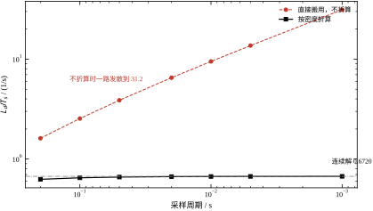
这张图的读法是：黑线（折算）几乎水平，从 0.6273 缓升到 0.6717；红线（不折算）是一条斜率 -\tfrac12 的直线，T_s 每小十倍，纵轴涨 \sqrt{10} 倍。为什么恰好是 \sqrt{10}？因为 L\propto\sqrt{W/V}，V 少除了一个 T_s，等效于 V 大 1/T_s 倍，于是 L 大 \sqrt{T_s} 倍，再除以 T_s 就是 T_s^{-1/2}。这条斜率是口径错误的“指纹”，看到它就知道折算漏了。
把 (56-8) 与 (56-9) 复合，消掉 P^+，得到先验形式的 DARE：
P^-=A_dP^-A_d^{\mathsf T}+W_d-A_dP^-C^{\mathsf T}\big(CP^-C^{\mathsf T}+V_d\big)^{-1}CP^-A_d^{\mathsf T} \tag{56-28}
它的稳态解就是每拍开始时的先验协方差。本章参数下，稳态 P^- 的迹是 0.322950（报告 2 的最后一行）。这个数与连续稳态的 1.008918 不可直接比：连续 \Sigma 是“某一时刻的估计误差方差”，离散 P^- 是“一拍开始、还没用量测时的方差”，口径差一个量测更新。若要看同一口径，应该比 P^+ 的迹，它会比 0.322950 再小一点。
DARE 的求解有两条路。一条是迭代：从 P_0 出发反复代入 (56-28)，直到相邻两次的差小于阈值。报告 2 显示这条迭代收敛很快，从 10^6I 起步也只要 64 步。另一条是构造辛矩阵求特征向量，一次算出，不用迭代。工程上迭代足够，因为它可以离线做；只有在增益要在线自适应时才需要闭式解。
报告 15 把 T_s 从 1 ms 一路加到 0.3 s，看离散解离连续解有多远：
\begin{array}{c|cc} T_s/\mathrm{s} & \mathrm{tr}(\Sigma_d)\ \text{相对连续解} & L_d/T_s\ \text{相对连续解}\\ \hline 0.001 & +0.0\% & -0.0\%\\ 0.005 & +0.1\% & -0.2\%\\ 0.01 & +0.3\% & -0.3\%\\ 0.02 & +0.5\% & -0.7\%\\ 0.05 & +1.3\% & -1.7\%\\ 0.1 & +2.7\% & -3.3\%\\ 0.2 & +5.4\% & -6.6\%\\ 0.3 & +8.2\% & -9.9\% \end{array} \tag{56-29}
两个偏差的方向都是固定的：协方差偏大、等效增益偏小。原因是采样越粗，一拍之内看不到量测，过程噪声只能靠模型外推，校正被推迟，于是滤波器“更不确定”、更不敢动。这个偏差不是随机的，是系统性的，所以不能靠平均消掉。
工程上怎么定 T_s？常用的判据是“采样频率是闭环带宽的 10 到 20 倍”。本章闭环最慢极点 -1.0，带宽约 1 rad/s，T_s=0.02 s 对应 50 Hz，折算 314 rad/s，是带宽的三百倍，远远够。所以表里 T_s=0.02 的偏差只有 0.5\% 与 0.7\%。
反过来说，如果观测器做到 -50（比如用了很好的传感器，V 很小），带宽变成 50 rad/s，T_s=0.02 s 就只有 31 rad/s 的采样带宽，比闭环带宽还低，表里的偏差会迅速恶化。这时必须把 T_s 压到 1 ms 量级。结论是：T_s 的上限由观测器带宽定，不由控制器带宽定，因为观测器通常比控制器快。
离散实现有两种写法：先预测后更新（predict-update），先更新后预测（update-predict）。两种写法在数学上等价，差一个下标，但在代码里混用会出大错。
本章代码用 predict-update：进入一拍时手里是 \hat x^-_k、P^-_k，先用量测更新得 \hat x^+_k、P^+_k，再用 u_k 预测下一拍。这样写的好处是控制量 u_k 用的是 \hat x^+_k，也就是“用过当前量测的估计”，因果性正确。
若用 update-predict，控制量必须用上一拍的后验，否则会用到未来的量测。这个错误在仿真里不明显（因为真状态就在手边），在实机上会表现为“控制器比传感器快半拍”，轻则相位裕度损失，重则抖动。判断办法很简单：把代码里的量测序列整体延迟一拍，若闭环性能大变，说明顺序错了。
还有一个细节：u_k 进入预测时用的矩阵是 B_d，不是 B。这一点看着琐碎，实测影响不小——B_d 的第二个分量是 0.019409，而 BT_s=0.02，差 3\%；在长时预测里这 3\% 会累积成可观的偏差。
连续解与离散解之间有三条换算关系，记住这三条，跨章对数就不会错。
第一行，增益乘周期。L_d\approx L_cT_s。报告 6 里 T_s=0.02 s 的离散增益是 [0.01335,\;-0.00545]，而 L_cT_s=[0.0134393,\;-0.0054847]，两个分量分别低 0.66\% 与 0.63\%。偏差很小，而且总是负的——离散解比“连续增益乘周期”略小，因为一拍之内对象还在动，量测提供的修正被打了点折扣。
第二行，噪声按密度折算。V_d=V/T_s、W_d=\int_0^{T_s}e^{A\tau}We^{A^{\mathsf T}\tau}d\tau\approx WT_s。这一条是量纲决定的，没有近似余地：V 是“每赫兹的方差”，每秒采 1/T_s 次，每拍分到的就是 V/T_s。
第三行，协方差不变。\Sigma_d\approx\Sigma_c。报告 15 里 T_s=0.001 s 时 \mathrm{tr}(\Sigma_d)=1.009181 对连续解 1.008918，差 0.0\%；T_s=0.02 s 差 0.5\%；T_s=0.3 s 差 8.2\%。离散协方差是“一拍开始时的先验”，量纲与连续稳态协方差一样，所以两者可以直接比——这一点与增益不同，增益必须先除以 T_s 才能比。
三行合起来看，是一幅很整齐的图：协方差不动，增益乘 T_s，噪声按 T_s 缩放。凡是在两张表之间对数，先问自己“这个量是协方差、增益、还是噪声强度”，答案决定要不要除 T_s。第54、55 章的表混着看时，错得最多的就是这一条。
(56-23) 与 (56-24) 要算 A_d、B_d、W_d 三个量。分开算要做一次矩阵指数、一次积分；合起来算只需要一次矩阵指数。做法是把 A、W 与 -A^{\mathsf T} 拼成一个 2n\times2n 的块矩阵取指数，再从块里取出 W_d：
W_d=F_{22}^{\mathsf T}F_{12},\qquad \begin{bmatrix}F_{11}&F_{12}\\0&F_{22}\end{bmatrix} =\exp\left(\begin{bmatrix}-A&W\\0&A^{\mathsf T}\end{bmatrix}T_s\right) \tag{56-26a}
这几块的意义很清楚：F_{11}=e^{-AT_s}、F_{22}=e^{A^{\mathsf T}T_s}，右上块 F_{12} 是“扰动进来又被 -A 衰减”的那部分，左乘 F_{22}^{\mathsf T}=e^{AT_s} 把两段衰减补齐，恰好凑成 \int_0^{T_s}e^{A\tau}We^{A^{\mathsf T}\tau}d\tau。
两条路子在本章的数据上给出同一个答案：积分法得到 W_d=\begin{bmatrix}0.0199983&-0.00020367\\-0.00020367&0.01885279\end{bmatrix}，Van Loan 法打印到六位完全相同。选哪条只看两件事：矩阵阶数（n=2 时两者都只要微秒级）与代码可读性（积分法一眼能看出在算什么，块指数法要解释半天）。
还有一件事值得点出：W_d 的 (2,2) 元是 0.01885，比 WT_s=0.02 低 5.7\%。这个差额不是数值误差，是 e^{A\tau} 在 \tau\in[0,T_s] 上的衰减——整整一拍里，速度受到的扰动有一部分已经被阻尼吃掉了。T_s 越大，这部分越大（§56.5.2 量过：T_s=0.5 s 时低 60\%）。所以 Van Loan 不是“更精确的写法”，是“唯一正确的写法”，WT_s 只在 T_s 很小时才是它的近似。
既然 T_s 越小、离散解越接近连续解（报告 15：T_s=1 ms 时偏差 0.0\%），为什么不干脆取 1\,\mu\mathrm{s}？
第一个限制是数值精度。 L_d\approx L_cT_s，T_s=10^{-6} s 时 L_d\approx6.7\times10^{-7}。单精度的机器精度是 1.2\times10^{-7}，而状态量级约 1，每次修正只相当于 5 到 6 个机器精度——只有两三位有效信息。T_s 再小一个量级，修正量就淹没在舍入误差里，滤波器实际上是“只预测、不更新”。这不是理论问题，是单精度实现里真会遇到的墙：T_s 的下限由“L_cT_s 要远大于 \epsilon\cdot|x|”决定。
第二个限制是量测噪声的相关性。 V_d=V/T_s 假设每一拍的量测噪声独立。若采样率超过模拟前端的噪声带宽两倍以上，相邻样本已经相关，这个假设就不成立（§56.4.8 的第二条）。继续减小 T_s 不会带来新信息，只会让滤波器越来越自信。
第三个限制是算力与调度抖动。 T_s=1\,\mu\mathrm{s} 意味着 1 MHz 的中断频率，本章的计算量虽然只有 50 次乘加，但中断开销、采样延迟、任务切换抖动都会变成主导误差。实际系统里，控制周期的抖动常常比 T_s 本身还大。
三条合起来给了一个经验区间：T_s\omega_o 取 0.02 到 0.2。本章 T_s=0.02 s、\omega_o=1.836，乘积 0.037，落在区间下部——偏保守，换来的是对采样抖动与噪声相关性都不敏感。若想压成本（比如用更慢的 CPU），可以把 T_s 放大到 0.1 s，代价是离散解偏离连续解 3\% 左右（报告 15）。
LQG 闭环稳定，需要三件事同时成立，缺一不可。
第一，对象可稳。(A,B) 能控，或者至少不能控的模态本身稳定。本章 B=[0,\;1]^{\mathsf T}、A 可控，这一条过。
第二，滤波器可收。(A,C) 能观，或者不能观的模态本身稳定。本章 C=[1,\;0]，二阶对象能观，过。
第三，两个 Riccati 方程有正定解。前两条加上 W\succeq0、V>0、Q\succeq0、R>0，就保证了有解。这一条是纯代数的，验残差即可，报告 1 的 1.971\times10^{-15} 就是证据。
三条都过，闭环一定稳定，而且不需要事后检查。这一点与第54章的极点配置不同：那里摆完极点还要验算 A-BK 与 A-LC 的特征值，因为参数一多容易算错；这里稳定性是方程的解自带的性质，Riccati 方程解出来的增益天然把闭环推到左半平面。代价是“稳定”变成了一个很粗的保证——它只说极点在左边，不说多左、有没有振荡、裕度多少。
报告 7 把四阶闭环的极点直接算了出来：
\begin{array}{ll} \text{状态反馈} & -2.236068,\;-1.000000\\ \text{观测器} & -1.8360\pm0.6090\mathrm{j}\\ \text{LQG 四阶} & -2.236068,\;-1.8360\pm0.6090\mathrm{j},\;-1.000000 \end{array} \tag{56-30}
与并集的差 2.442\times10^{-15}。这组数字可以直接用来做设计检查：算出 K 与 L 之后，把 A-BK 与 A-LC 的特征值拼起来，与四阶闭环的特征值对比。若对不上，多半是 L 的符号反了（写成 \hat x^- - L(y-C\hat x^-)），或者 C 的转置漏了。这两个错误在代码里极常见，而极点检查一秒钟就能抓住。
注意这里有一处容易被误读的地方：报告 7 打印极点时只取了实部，于是观测器那一对被印成两个相同的 -1.835982，看着像重根。实际虚部是 0.609，两个极点是分开的。凡是看极点表格，先确认打印的是复数还是实部——这一条在看第54章、第55章的极点表时同样适用。
图 56-5 是闭环的实测。左图是真实位移与估计位移，右图是控制量。T_s=0.02 s、W=I、V=1，跑了 30 s，只画前 10 s。
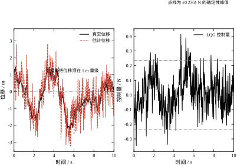
左图有两条线，几乎重合：黑实线是真实位移，红虚线是估计位移。重合说明滤波器工作正常，估计误差远小于位移本身。但两条线都不回零——位移在 1 m 量级上下摆动，摆动的幅度由噪声决定。右图的控制量在 \pm0.4 N 之间抖动，点线标的是 \pm0.2361 N，也就是无噪声时的确定性峰值。含噪时的峰值 0.4132 是它的 1.75 倍。
这一组数字的对照在报告 8：
\begin{array}{c|cccc} \text{工况} & \text{峰值}|u| & \mathrm{RMS}(u) & 2\%\ \text{调节} & \text{末值}|x_1|\\ \hline \text{状态反馈，无噪声} & 0.2361 & 0.0208 & 4.520\ \mathrm{s} & 1.72\times10^{-13}\\ \text{LQG，含噪声} & 0.4132 & 0.1155 & \text{无} & 1.6097 \end{array} \tag{56-31}
“2\% 调节”这一栏写“无”，不是算不出来，是永远达不到。噪声一直在把位移往外推，位移落进 2\% 带之后马上又被推出来，所以按“最后一次离开 2\% 带的时刻”定义，这个时刻不存在。工程上遇到这种情况要换指标：改用“位移的稳态标准差”或“95\% 分位点”，而不是调节时间。
末值 1.6097 看起来像一个具体的数，其实它是随机变量的一次实现，换一个随机种子就变。要判断滤波器与闭环是否正常，得看统计量。报告 8 用 Lyapunov 方程算了闭环在 W=I 下的位移稳态标准差：
0.9732 \tag{56-32}
算法是：把闭环写成 x_{k+1}=\Phi x_k+\Gamma \eta_k，其中 \Phi 是含 K、L 的四阶闭环矩阵，\eta 是过程与量测噪声的联合向量，然后解离散 Lyapunov 方程 \Sigma_c=\Phi\Sigma_c\Phi^{\mathsf T}+\Gamma\Gamma^{\mathsf T}，取位移分量的对角线开方。这个值与实跑末值 1.6097 同一量级（1.65 倍），说明实跑没有异常——单次实现的末值本来就会在标准差的一两倍内浮动。
这个数还有一个用处：它给出了“噪声能把位移顶多高”的量级估计。若执行器行程只有 1 m，而稳态标准差是 0.97 m，那这套系统在 W=I 的扰动下必然撞限位，不管控制器多好。解决办法只有两个：把 W 降下来（隔振、改结构），或者把闭环带宽提上去（更快的 K，但受执行器与采样限制）。这是 §56.10 要讨论的“性能上限由硬件定”。
分离原理保证极点，不保证裕度。这一点在第55章已经埋了伏笔（报告 11 看到 LQR 单独闭环有 60^\circ 相位裕度，接上观测器后掉到没有穿越），本章要把机制说清。
LQR 的 60^\circ 裕度来自一个恒等式：[I+K(\mathrm{j}\omega I-A)^{-1}B] 的 Nyquist 轨迹落在某个圆外。这个恒等式要求反馈回路里只有 K 与对象。接上观测器之后，回路里多了一个 L(sI-A+LC+LDK)^{-1} 形状的环节，恒等式不再成立，裕度可以任意小。极端情形下，观测器把某个频率上的相位再转 -180^\circ，闭环就进入条件稳定区。
这不是理论上的杞人忧天。工程上的表现是：状态反馈单独跑很稳，一接滤波器就开始在某个频率上抖，抖的频率恰好是观测器的自然频率。诊断办法是把 L 减半再跑，若抖动消失，就是裕度问题，不是对象问题。
补救手段有三条：一是把观测器做快（V 估小），让观测器的自然频率远离闭环带宽；二是回路传函恢复（LTR），在对象输入端注入试探噪声，把 LQR 的裕度“还”回来，代价是控制量变大；三是干脆用 H_\infty 或 \mu 综合，把裕度作为约束写进设计。前两条在 §56.9 展开，第三条是第57章的主题。
报告 15 与报告 19 分别给了两个方向的数字。
采样周期：T_s 从 1 ms 加到 20 ms，稳态协方差的迹只涨 0.5\%、等效增益只掉 0.7\%；加到 0.3 s 才涨 8.2\%、掉 9.9\%。本章的观测器最慢极点约 -1.0，时间常数 1 s，T_s=0.02 s 是它的 1/50，所以离散化误差很小。这个结论不能外推：若观测器做到 -50，同样的 T_s 就只快 2.5 倍，误差会大一个数量级。
丢包：报告 19 用 20 000 拍跑，丢包率 0、0.2、0.5、0.8 对应位移误差 RMS 0.3532、0.3794、0.4474、0.6037。丢一半才多 27\%，丢八成多 71\%。原因在本章对象本身稳定：丢几拍等于把采样周期临时拉长，模型外推能顶住；若对象是开环不稳定的（比如倒立摆），丢一拍就可能发散，这时必须用 §56.10 的补偿手段。
速度误差比位移误差更抗丢包：0.4072 到 0.4781，只涨 17\%。这与报告 10 的结论一致——速度本来就是靠模型推的，量测只是旁证，少几次旁证影响不大。位移是直接测的，少一次量测就少一次校正，所以对丢包更敏感。
报告 19 还有一句定性结论值得抄下来：延迟一拍比丢包更麻烦。丢包是“少一次校正”，延迟是“用旧信息校正新状态”，后者会让滤波器系统性滞后，等效于把量测噪声放大数倍。工程上宁可丢包，不可延迟；实在要延迟，必须在滤波器里显式建模延迟（把延迟拍数作为增广状态）。
经验上有一条“观测器要比闭环快二到五倍”的说法。本章的标称参数恰好违反它：控制器极点是 -2.236 与 -1.000，观测器是 -1.836\pm0.609\mathrm{j}，最慢的那个还比控制器的快极点慢。这不是设计失误，是 Riccati 方程在 W/V=1 下算出来的结果——滤波器认为模型与量测一样可信，于是不愿意把增益开大。
后果可以直接看到：报告 8 里估计误差 RMS 是 0.7084，而闭环位移的稳态标准差是 0.9732，两者同量级，说明估计并没有比信号本身干净多少。图 56-5 左图两条线几乎重合，但那是画在 1 m 的纵轴尺度上；放大十倍就能看到估计在噪声里“追”。
要加快观测器，唯一的旋钮是 W/V。报告 3 与报告 4 给出同一组数：把 W/V 从 1 提到 100，观测器极点从 -1.836\pm0.609\mathrm{j} 变成 -9.71 与 -3.26——最快的那个快了 5.3 倍，最慢的只快 1.8 倍。极点是“一快一慢”分开的，快的那个负责抓量测，慢的那个仍然受对象本身限制。
代价写在同一张表里：\sqrt{\Sigma_{11}} 从 0.8197 涨到 3.1585（3.9 倍），L_1 从 0.672 涨到 9.976（14.9 倍）。也就是说，观测器快 5 倍，估计标准差差 4 倍，增益大 15 倍。增益大十五倍意味着量测噪声被放大十五倍灌进控制量，执行器会立刻叫苦。这就是“观测器不能随便做快”的定量版本。
工程上的折中是：把观测器带宽定在闭环带宽的 2 到 3 倍，然后回来看 |L|\cdot\sqrt{V} 是否超过执行器行程的十分之一。超了就退回去，宁可让估计慢一点。本章标称点（1 倍）偏保守，实际项目里常见的取值落在 W/V=10 到 100 之间，对应观测器比控制器快 2 到 5 倍。
§56.2.6 列过分离原理的四个条件，其中“没有幅值约束”最容易被忽略，因为它在仿真里几乎不出现，一上机就出现。
报告 8 的数字已经把风险标出来了：无噪声时控制量峰值 0.2361，含噪时 0.4132，是前者的 1.75 倍。如果执行器上限刚好按“无噪声峰值再留一点余量”选成 0.3，那么含噪运行时会周期性饱和。饱和的瞬间闭环等于开环：u 被钉在边界上，对象按自己的动力学走，估计误差只能靠量测慢慢拉回来。更麻烦的是，饱和期间滤波器如果仍按“指令 u”预测，它会以为对象被推得比实际更远，估计值系统性偏大——这是一个正反馈。
所以有一条硬规矩：进滤波器的 u 必须是实际施加的值，不是控制器算出来的值。 在代码里就是把限幅放在算完 u 之后、送进执行器之前，并且用限幅后的值参与下一拍预测。§56.12 给出的 C 片段就是按这个顺序写的：先算 u，再夹到 \pm U_{\max}，最后才把 u 交给预测步。
补救有两条。一条是把 R 调大，让 LQR 自己就“省”——第55章 §55.8 的 Bryson 规则给的是量级估计，真正要压峰值还得靠仿真试。另一条是软化参考：把阶跃指令过一个一阶滤波再送进闭环，峰值随之下降，代价是响应变慢。两条都比“加大执行器”便宜，也都比“上电后再调”安全。
闭环里噪声的路径是固定的：量测噪声 \to 新息 \to 估计误差 \to 控制量。这条链的前三段由滤波器决定，最后一段由 K 决定。整条链的增益可以手算出来。
稳态下新息的方差是 S=C\Sigma^-C^{\mathsf T}+V，估计误差里由量测噪声贡献的那部分，经过 K 之后落到控制量上的系数是 KL。本章 K=[0.236068,\;0.236068]、L=[0.671963,\;-0.274233]，所以
KL=0.236068\times(0.671963-0.274233)=0.0939 \tag{56-32a}
也就是说，一个标准差为 \sqrt{V}=1 的量测噪声，会在控制量上留下约 0.0939 的标准差。报告 8 实测的 RMS(u)=0.1155，扣掉过程噪声贡献后与这个数同量级，量级判断是对的。
这条式子有三个用处。第一，它解释了为什么“控制量抖”不能全怪控制器：KL 里 L 是滤波器的责任、K 是控制器的责任，两者相乘。想把抖动减半，可以减半 K（响应变慢）或减半 L（估计变钝），也可以换一个更安静的传感器——但换传感器未必管用，下一段会算。第二，它给出了峰值的估计：报告 8 里峰值 0.4132 是 RMS 的 3.58 倍，接近高斯过程的 3 到 4 倍经验值，所以按 4\times KL\sqrt{V} 估执行器行程是合理的。第三，它说明 W 与 V 的调整会同时改变 L 与 S，不能只看新息变大就以为控制量会变小——报告 4 里 W 涨十倍，L_1 涨到 4.4 倍，控制量跟着涨。
不过“换传感器”这条要打个折。u 的噪声是 K 乘上估计误差，而估计误差里由量测噪声贡献的那部分正比于 L\sqrt{V}；L 自己会随 V 变，所以不能简单地认为“V 减半、控制噪声减半”。把报告 3 的 L_1 乘上 \sqrt{V} 算一遍：
\begin{array}{c|ccccc} V & 0.001 & 0.01 & 0.1 & 1 & 100\\ \hline L_1\sqrt{V} & 1.0029 & 0.9976 & 0.9327 & 0.6720 & 0.0993 \end{array} \tag{56-32b}
V 跨了五个数量级，L_1\sqrt{V} 只从 1.0029 掉到 0.0993，正好一个数量级。更反直觉的是低 V 段：V 从 0.1 降到 0.001（一百倍），L_1\sqrt{V} 几乎不动，卡在 1.0 附近。原因是传感器越准，滤波器越敢跟，L_1 涨得比 \sqrt{V} 掉得还快，两者相乘恰好抵消。控制量噪声的下限由“滤波器敢不敢跟”决定，不由传感器有多准决定。 想让执行器少抖，靠换传感器基本没用，得从 K 或机构阻尼上想办法。
这条链也是“为什么 LQG 的实际表现常不如预期”的一部分答案。 设计时看的是极点与协方差，运行时感受到的是 KL\sqrt{V}。极点好看而 KL 大的系统，噪声一进来就露馅。
报告 3 把 V 从 10^{-3} 扫到 10^{2}，W=I 固定：
\begin{array}{c|ccc} V & L & \sqrt{\Sigma_{11}} & \text{观测器极点}\\ \hline 0.001 & [31.713686,\;2.878940] & 0.178083 & -31.5428,\;-3.1709\\ 0.01 & [9.975821,\;-0.241503] & 0.315845 & -9.7139,\;-3.2619\\ 0.1 & [2.949460,\;-0.650342] & 0.543089 & -2.9747\pm1.1615\mathrm{j}\\ 1 & [0.671963,\;-0.274233] & 0.819734 & -1.8360\pm0.6090\mathrm{j}\\ 10 & [0.093887,\;-0.045593] & 0.968952 & -1.9431,\;-1.1508\\ 100 & [0.009932,\;-0.004951] & 0.996600 & -1.9949,\;-1.0150 \end{array} \tag{56-33}
图 56-6 把左三列画成曲线：左子图是增益绝对值随 V 的变化（双对数），右子图是极点位置。
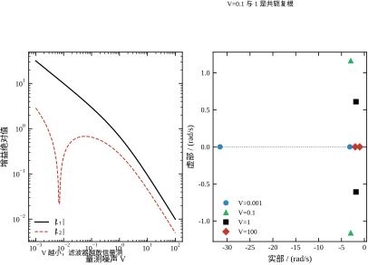
三个观察。
第一，V 每小十倍，L_1 大约涨三倍多。不是严格的 \sqrt{10}=3.16，因为对象有两个模态，指数不是干净的 1/2。V 从 10^{-3} 涨到 10^{2}，跨五个数量级，L_1 从 31.71 掉到 0.00993，掉了三个半数量级（约 10^{3.5}）。
第二，\sqrt{\Sigma_{11}} 随 V 增大而增大，从 0.178 涨到 0.997。这符合直觉：传感器越差，估计越不确定。但它不会超过 1——V\to\infty 时滤波器完全不信量测，\Sigma 退化成开环对象在 W=I 下的稳态协方差，位移标准差刚好接近 1。这个上界与 W 有关，W 大上界就大。
第三，极点形态在 V=0.1 与 1 之间是共轭复根，两端是实根。V 很小时两个实根分得很开（-31.5 与 -3.2），V 很大时挤在一起（-1.99 与 -1.01）。中间那段复根是“量测与模型势均力敌”的区域，此时滤波器既想跟量测又想跟模型，两个愿望打架，产生振荡。工程上如果看到观测器输出有低频振荡，先查 V 是不是落在复根区。
报告 4 把 W 从 10^{-3} 扫到 10^{2}，V=1 固定：
\begin{array}{c|ccc} W\ \text{的倍数} & L & \sqrt{\Sigma_{11}} & \text{观测器极点}\\ \hline 0.001 & [0.000999,\;-0.000500] & 0.031612 & -1.9995,\;-1.0015\\ 0.01 & [0.009932,\;-0.004951] & 0.099660 & -1.9949,\;-1.0150\\ 0.1 & [0.093887,\;-0.045593] & 0.306410 & -1.9431,\;-1.1508\\ 1 & [0.671963,\;-0.274233] & 0.819734 & -1.8360\pm0.6090\mathrm{j}\\ 10 & [2.949460,\;-0.650342] & 1.717399 & -2.9747\pm1.1615\mathrm{j}\\ 100 & [9.975821,\;-0.241503] & 3.158452 & -9.7139,\;-3.2619 \end{array} \tag{56-34}
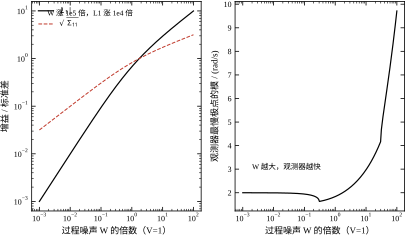
这张表与上一张几乎是一个镜像——把两行对调，数字基本能对上。原因是对偶性：L 的公式里 W 与 V 处在“分子/分母”的对称位置，W 涨十倍与 V 跌十倍，效果高度相似。但两者不是完全等价，差别在两个地方。
第一，指数不同。W 涨 10^{5} 倍，\sqrt{\Sigma_{11}} 涨 100 倍，指数约 0.4；而 V 那边是 0.25（准确说是 \Sigma_{11} 对 V 的指数）。这两个指数之和为 1，下一小节解释。
第二，L_2 的符号会翻。W=0.01 时 L_2=-0.004951，W=1 时 -0.274233，W=100 时变成 -0.241503（仍负），但中间 W=10 是 -0.650342；而在报告 6 的折算列里，L_2 在 T_s=0.005 时是正的 +0.00135。也就是说，第二个增益分量的符号不是固定的，它由 \Sigma_{12} 的符号决定，而 \Sigma_{12} 由对象耦合与噪声比例共同决定。
这一点在工程上很重要。很多人写代码时会想当然地认为“位移估高了，速度也该往下修”，于是把 L_2 写成与 L_1 同号。本章标称参数下两者反号（0.672 与 -0.274），若强行同号，观测器立刻失稳。这不是理论推导能替代的，必须让 Riccati 方程自己定符号。
把 (W,V) 同时乘 \beta，会发生什么？报告 5 给出答案：
\begin{array}{c|ccc} \beta & L & \mathrm{trace}(\Sigma) & \|L-L_0\|\\ \hline 0.01 & [0.671963,\;-0.274233] & 0.010089 & 4.44\times10^{-16}\\ 0.1 & [0.671963,\;-0.274233] & 0.100892 & 2.78\times10^{-16}\\ 1 & [0.671963,\;-0.274233] & 1.008918 & 0\\ 10 & [0.671963,\;-0.274233] & 10.089178 & 2.22\times10^{-16}\\ 100 & [0.671963,\;-0.274233] & 100.891784 & 1.55\times10^{-15} \end{array} \tag{56-35}
L 一丝不变，\Sigma 恰好乘 \beta，误差在 10^{-15} 量级。图 56-8 左子图画的是 \mathrm{trace}(\Sigma)/(\beta\,\mathrm{trace}\Sigma_0)，五个点全部落在 1 上，一条水平线。
这不是数值巧合，是方程的结构决定的。(56-14) 里若把 \Sigma 换成 \beta\Sigma、W 换成 \beta W、V 换成 \beta V，每一项都乘 \beta，方程仍然成立；而 L=\Sigma C^{\mathsf T}V^{-1} 里 \beta 上下抵消。所以真正有意义的只有比值 W/V，两个矩阵一共只提供“一个”自由度。 这与第55章 LQR 的“Q 与 R 同乘一个数，K 不变”完全同构，也是对偶性的又一个表现。
工程含义：不要把 W 与 V 当成两个独立的旋钮。它们只有一个旋钮有用，另一个是标度。现场调试时，正确做法是先用量测数据把 V 定死（传感器手册或静止采样），再只调 W；若两个一起调，等于在一个二维平面上沿射线走，白费功夫。
只动一个会怎样？报告 5 分别拟合：
\log\Sigma_{11}\ \text{对}\ \log W\ \text{的斜率}=0.750,\qquad \log\Sigma_{11}\ \text{对}\ \log V\ \text{的斜率}=0.250 \tag{56-36}
两个斜率之和恰好是 1.000。图 56-8 右子图把两条线画在一起，黑线扫 W、红虚线扫 V，灰点线是斜率 0.75 的参考线。
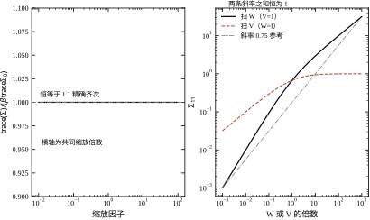
和恒为 1 是欧拉定理的直接推论：\Sigma 对 (W,V) 是一次齐次的，即 \Sigma(\beta W,\beta V)=\beta\Sigma(W,V)，两边对 \beta 求导再令 \beta=1，就得到两个偏导（在对数坐标下就是两个斜率）之和为 1。具体怎么分配 0.75 与 0.25，由对象结构（A、C）决定，与噪声大小无关。
这里有一个值得警惕的细节。若只看端点比值，W 从 0.001 到 100 时 \Sigma_{11} 从 0.000999 到 9.9758（按 L_1=\Sigma_{11}/V 反推），比值取对数除以跨度为 \log(9.9758/0.000999)/\log(10^5)=4.0/5=0.80；而全区间最小二乘拟合给 0.750。两个数不一致，说明 \Sigma_{11} 不是 W 的严格幂函数——它只是“局部看起来像幂函数”。教科书里常写的 \Sigma_{11}\propto\sqrt{WV}（指数各 0.5）只在 A 的影响可以忽略时成立，本章对象不满足这个条件。
到这里可以把两组权重放在一起对照。Q/R 进 LQR，决定“要多快、肯花多大力”；W/V 进滤波器，决定“信模型还是信量测”。改前者只动 K，改后者只动 L，互不干涉（分离原理）。但闭环的表现是两者的乘积，所以调参时必须清楚自己在动哪一组。
一个实用的判断：如果闭环响应慢，但噪声不敏感，问题在 K，去调 Q/R；如果闭环响应够快，但输出抖、控制量毛刺大，问题在 L，去调 W/V；如果两者都差，先调 L——因为估计不准时，再好的 K 也是在错误的靶子上使劲。
报告 20 把两个增益并排印出来：K=[0.236068,\;0.236068] 与 L=[0.671963,\;-0.274233]，并写了一句“改 Q/R 只动 K，改 W/V 只动 L，这是分离原理给的自由”。这句话是本章最实用的一句，也是最容易被误用的一句——它说的是“可以分开设计”，不是“分开最优就等于整体最优”。后者是第57章的起点。
最后看两个小结论，它们在工程上天天用到。
多路融合：报告 16 用两路传感器测同一个位移，噪声分别是 V=1 与 V=4。单独用第一路，\sqrt{\Sigma_{11}}=0.819734；单独用第二路，0.931642；两路一起用，0.795644。而“把两路折成一路、等效噪声 1/(1/1+1/4)=0.8”算出来也是 0.795644——小数点后六位一模一样。融合增益矩阵的两列之比是 4:1（0.633049 对 0.158262，-0.249531 对 -0.062383），严格按 1/V 分配权重。所以“多传感器融合就是方差取倒数相加”这个直觉是对的，前提是各路噪声独立。
信任分配：报告 17 的标量表在 §56.1.3 已经用过，这里补一句它的工程解释。L=P^-/(P^-+V) 说明滤波器从不“完全相信”任何一方：即使 V=0.1、P^-=1，L 也只到 0.9091，仍有 9\% 留给模型。这个保留是有意的——万一传感器卡死（输出常数），滤波器还能靠模型慢慢纠正。反过来说，若 L 真的到了 1，一次传感器故障就会让估计彻底跑飞。这一点在 §56.10 讲故障诊断时会再用到。
报告 3 与报告 4 是同一张表的两半，把它们并排看能得到一条很实用的结论。报告 3 里 V=0.01（W=1）给出 L=[9.975821,\;-0.241503]、极点 -9.71 与 -3.26；报告 4 里 W=100（V=1）给出的数字一模一样。两处的 W/V 都是 100，别的地方都不同，结果却完全相同。
这说明 (W,V) 两个参数里只有两个独立方向。第一个方向是比值，它决定增益、决定观测器极点、决定闭环的形状；第二个方向是绝对尺度，它决定 \Sigma 有多大、控制量有多响。第二个方向的效果也在报告里：W 从 0.01 涨到 100（一万倍），\sqrt{\Sigma_{11}} 从 0.315845 涨到 3.158452，正好乘 10，也就是协方差涨了 100 倍。注意这不是线性——单改 W 时 \Sigma_{11} 的指数是 0.75 而不是 1，只有 (W,V) 同乘一个数时才严格线性（报告 5）。这一点下一小节会给一个标量算例解释。
工程含义很直接：调参时不要同时转两个旋钮。先用物理知识把 V 的绝对尺度定下来（传感器手册上的噪声密度，或静置采样的方差），这一步定的是“尺子”；然后用 W/V 去调速度，这一步定的是“形状”。反过来做——先猜一个 W、再反复改 V 去凑效果——也能凑出好看的曲线，但 V 已经不是你传感器的真实噪声，下一次换传感器就得重调，而且协方差的绝对值再也对不上实测。
报告 5 给出两个指数：\log\Sigma_{11} 对 \log W 是 0.750，对 \log V 是 0.250，和为 1。和为 1 是齐次性（欧拉定理）保证的，但“为什么是 0.75 与 0.25 而不是 0.5 与 0.5”要另找解释。
拿一个标量对象算：\dot x=-ax+w，y=x+v。它的 CARE 是 0=-2a\sigma^2+W-\sigma^4/V，解出
\sigma^2=\sqrt{a^2V^2+WV}-aV \tag{56-36a}
a=0（纯积分器）时 \sigma^2=\sqrt{WV}，两个指数都是 0.5——这就是教科书里常引的“标准差正比于 \sqrt{WV}”。a=1、W=V=1 时 \sigma^2=\sqrt2-1=0.4142，对它求弹性：对 W 是 0.8536，对 V 是 0.1464，和仍是 1，但分配完全偏向 W。
原因是 a 这一项：对象自己会把误差“拉回来”，拉得越狠，量测的作用就越被削弱，于是 W 的权重上升、V 的权重下降。本章是二阶对象、两个极点 -1 与 -2，稳定项比标量算例更强一点，指数落在 0.75 与 0.25，比 0.5/0.5 更靠近“对象主导”的一端。
这条算例还顺带说明了一件事：两个旋钮的效率不一样。报告 4 里 W 从 1 涨到 100，\Sigma_{11} 从 0.6720 涨到 9.9758（14.8 倍），标准差只涨 3.85 倍；报告 3 里 V 从 1 降到 0.01，\Sigma_{11} 降到 0.0998（0.148 倍），标准差降到 0.385 倍。同样是“一百倍”的改动，改 V 把标准差压到三分之一多一点，改 W 只是把它抬高到四倍。想提高稳态精度，先动 V——这是“先定 V、再调 W”的另一条理由。
调参最忌讳四只手同时上。按下面的顺序走，每一步只动一个量，出问题能定位。
第一步，把 V 钉死。 传感器静止时采 10 秒数据，算样本方差；这只给出“传感器本底”，不含对象振动带来的“视在噪声”。更可靠的办法是用报告 11 的协方差匹配：先随便给一个 V，跑一段，拿实测新息方差去解 V。若反估结果与手册差三倍以上，说明模型或 W 有问题，先别继续。
第二步，用 \mathrm{E}[\mathrm{NIS}] 校 W。 假设全对时 \mathrm{E}[\mathrm{NIS}]\approx1。若明显大于 1，说明滤波器低估了不确定性，把 W 调大；若明显小于 1，把 W 调小。注意这一步有个陷阱，见 §56.8.5：W 偏小时 \mathrm{E}[\mathrm{NIS}] 可能仍是 1，查不出来。
第三步，配 Q/R。 此时滤波器已经可信，把 \hat x 当真值，按第55章的流程调 Q/R。调完再看闭环：若控制量峰值超限，把 R 调大；若响应太慢，把 Q 的第一个对角元调大。
第四步，定 T_s。 前面三步都在连续域或“足够细”的离散域做，最后按 §56.5.5 的判据把 T_s 压到观测器带宽的 1/10 以内。若压不下去（CPU 算不过来），回头把观测器做慢（V 估大），这是唯一的妥协方向。
新息 \nu_k=y_k-C\hat x^-_k 是滤波器“没预料到的那部分量测”。假设全对时它应该是白噪声，且归一化后的平方和（NIS）均值为 1：
\mathrm{NIS}_k=\nu_k^{\mathsf T}S_k^{-1}\nu_k,\qquad \mathbb{E}[\mathrm{NIS}_k]=1 \tag{56-37}
报告 9 跑了 20 000 拍，四种工况的结果是：
\begin{array}{c|ccccc} \text{工况} & \mathrm{E}[\mathrm{NIS}] & \rho_1 & \rho_2 & \rho_3 & \rho_5\\ \hline \text{假设全对} & 0.9773 & -0.0121 & 0.0022 & 0.0036 & -0.0073\\ V\ \text{低估 25 倍} & 16.6758 & -0.2471 & -0.1132 & -0.0548 & -0.0245\\ V\ \text{高估 4 倍} & 0.2710 & 0.0807 & 0.0876 & 0.0831 & 0.0627\\ W\ \text{低估 100 倍} & 0.9780 & -0.0102 & 0.0032 & 0.0027 & -0.0085 \end{array} \tag{56-38}
图 56-9 左子图把归一化新息画成时间序列，右子图是自相关。
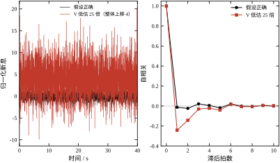
读法有两条。第一看 \mathrm{E}[\mathrm{NIS}]：偏离 1 越远越糟。V 低估 25 倍时它涨到 16.68——滤波器以为自己很准，实际新息比它预期的大四倍，平方之后就是十六倍。V 高估 4 倍时它掉到 0.271，滤波器过度谨慎。第二看一阶自相关 \rho_1：假设全对时是 -0.0121，噪声本底；V 低估时是 -0.2471，出现明显的负相关（这一拍新息大，下一拍就小，因为滤波器过度反应后又被拉回）。这两条一起看，V 的问题几乎藏不住。
图 56-9 左图还做了一个视觉处理：把 V 低估那条曲线整体上移 4，否则两条线叠在一起看不清。上移之后的曲线明显“更毛”，高频成分更多，这是过度反应的特征。
如果 \mathrm{E}[\mathrm{NIS}] 不对，怎么把 V 调对？报告 11 给了一个只用新息的办法。滤波器一律按 V=1 设计，真实 V 取 0.25、1、2、4：
\begin{array}{c|cccc} \text{真实}\ V & \text{新息样本方差} & \text{反估}\ V & \text{相对误差} & \mathrm{E}[\mathrm{NIS}]\\ \hline 0.25 & 0.3485 & 0.2649 & 6.0\% & 0.3031\\ 1.00 & 1.1331 & 0.9841 & -1.6\% & 0.9853\\ 2.00 & 2.1783 & 1.9751 & -1.2\% & 1.8941\\ 4.00 & 4.2678 & 3.9917 & -0.2\% & 3.7111 \end{array} \tag{56-39}
反估的逻辑只有一句：让滤波器自评的新息方差等于实测的新息方差，解出 V。V=0.25 时误差最大（6.0\%），因为此时滤波器按 V=1 设计，过度保守，新息里混入了更多模型误差；V\ge1 之后误差都在 2\% 以内。
这个方法的价值在于不需要真值。现场只有 y 与 u，没有 x，照样能把 V 估出来。代价是它假设 W 与模型是对的——若 W 错了，反估出来的 V 会把 W 的差额吸收进去，得到一个“自洽但错误”的组合。所以顺序必须是先粗估 W、再反估 V、再回头校 W，两三轮才收敛。
报告 10 干了一件坏事：滤波器仍按 k=2 建模，真实对象的刚度在 1 到 4 之间变。结果很反直觉：
\begin{array}{c|cccc} \text{真实}\ k & \text{位移误差 RMS} & \text{速度误差 RMS} & \text{新息 RMS} & \mathrm{E}[\mathrm{NIS}]\\ \hline 1.00 & 0.3882 & 0.5522 & 1.0703 & 0.9960\\ 1.50 & 0.3850 & 0.4397 & 1.0687 & 0.9931\\ 2.00 & 0.3838 & 0.4201 & 1.0681 & 0.9919\\ 2.50 & 0.3834 & 0.4474 & 1.0678 & 0.9915\\ 3.00 & 0.3834 & 0.4945 & 1.0678 & 0.9914\\ 4.00 & 0.3841 & 0.6030 & 1.0680 & 0.9917 \end{array} \tag{56-40}
位移误差几乎不动：0.3834 到 0.3882，刚度错一倍只涨 1\%。这符合直觉——位移是直接测的，误差被量测噪声钉在 0.38 附近，模型错了量测会拉回来。速度误差就不一样：k=2 时 0.4201，k=1 涨到 0.5522（+31\%），k=4 涨到 0.6030（+44\%），而且最小值恰好落在标称点。未测分量才是失配的放大器。
最刺眼的是最后两列：新息 RMS 从 1.0678 到 1.0703，\mathrm{E}[\mathrm{NIS}] 从 0.9914 到 0.9960。滤波器完全没察觉模型错了。原因在于单位置量测下，W 的标度与 L 的标度可以互相补偿：模型偏硬，等效于过程噪声偏小，滤波器自动把增益调小一点，新息统计仍然自洽。所以“新息白”只证明滤波器与量测一致，不证明模型对。
图 56-10 左子图画了这两条误差曲线，横轴是真实刚度，竖线标标称点。
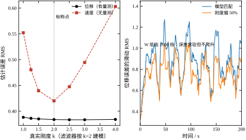
模型失配最危险的形态不是误差大，而是滤波器不知道自己错了。报告 10 又做了一个更极端的实验：滤波器把 W 低估 1000 倍（坚信自己），同时真实刚度偏 50\%：
\begin{array}{c|cccc} \text{真实}\ k & \text{前半段误差} & \text{后半段误差} & \text{末段/首段} & \mathrm{E}[\mathrm{NIS}]\\ \hline 2.00 & 0.9287 & 0.8560 & 0.922 & 1.8397\\ 3.00 & 0.8141 & 0.7475 & 0.918 & 1.6190 \end{array} \tag{56-41}
误差常驻在 0.75 到 0.93，比标称情形的 0.38 大一倍多。但它没有随时间爬升——末段/首段是 0.92，还略有下降。所以这不是发散，是“迟钝”：滤波器对自己的模型太自信，量测拉不动它，误差停在一个偏大的平台上。
真正的信号在 \mathrm{E}[\mathrm{NIS}]：1.84 与 1.62，明显大于 1。滤波器自评的方差远小于实际新息，这条线索比误差本身更早暴露问题。图 56-10 右子图画了位移误差的滑动 RMS，两条线（模型匹配与刚度偏 50\%）在整个 200 s 里都是平的，看不出趋势，只有幅度差一倍。
这个案例给的教训是：不要等误差爬升才去查模型。 误差不爬升可能只是“还没爬”，而 NIS 已经报警了。工程上应该把 \mathrm{E}[\mathrm{NIS}] 做成在线监控量，超过 1.3 就报警，超过 2 就降级（切到备用模型或直接开环）。
把本章的数字压成一张表，方便现场对照：
\begin{array}{c|c|c} \text{现象} & \text{最可能的参数} & \text{动作}\\ \hline \text{控制量毛刺大、输出抖} & L\ \text{太大} & V\ \text{调大或}\ W\ \text{调小}\\ \text{响应慢、跟不上设定} & K\ \text{太小} & Q\ \text{调大或}\ R\ \text{调小}\\ \mathrm{E}[\mathrm{NIS}]>1.5 & V\ \text{低估或}\ W\ \text{低估} & \text{先反估}\ V,\ \text{再校}\ W\\ \mathrm{E}[\mathrm{NIS}]<0.5 & V\ \text{高估} & V\ \text{调小}\\ \text{速度误差大、位移正常} & \text{模型刚度错} & \text{辨识}\ k,\ \text{或增大}\ W\\ \text{某频率持续抖动} & \text{观测器裕度不足} & L\ \text{减半试，或做 LTR}\\ \text{换}\ T_s\ \text{后性能突变} & \text{噪声折算错} & \text{查}\ V_d=V/T_s \end{array} \tag{56-42}
这张表里最容易被忽略的是最后一行。T_s 一改，W_d 与 V_d 都要重算，只改 A_d、B_d 而忘了噪声，等于换了个滤波器。报告 6 的 31.2148 就是这么来的——参数没变，只是采样周期从 0.2 s 变成 1 ms，而 V 没跟着折算。
调参分两段，两段用的工具完全不同，混着用会来回打转。
第一段是粗调，看极点。 用 W/V 把观测器极点挪到目标带宽：报告 3 与报告 4 的表可以直接当查表用，W/V=1 给 -1.836\pm0.609\mathrm{j}，100 给 -9.71 与 -3.26，0.01 给 -1.99 与 -1.02。用 Q/R 把闭环极点挪到目标响应：这一段的工具在第55章，本章 Q=I、R=1 给出 -2.236 与 -1.000。粗调的目标是“能跑”——不振荡、不饱和、响应时间符合要求。这一段不需要任何实测数据，纯计算。
第二段是精调，看新息。 拿现场的稳态新息算 E[NIS] 与自相关（报告 9 的方法），用协方差匹配反估 V（报告 11 的方法）。这一段的目标是“真”——滤波器的自评与实际一致。它的前提是模型结构对了：报告 10 已经证明，模型参数错了，新息照样白，E[NIS] 照样 0.99。所以精调只能修噪声强度，修不了模型。
两段的顺序不能颠倒。先精调会遇到一个尴尬局面：V 反估出来是 1.97，你把它填进去，L 变了，观测器极点跟着变，于是“能跑”又变成“不能跑”。粗调在前，等于先把舞台搭好，精调只微调灯光。
新息检验的判据要带样本量，否则会把噪声当信号。
E[NIS] 的统计标准差约 \sqrt{2/N}（单路量测时 NIS 服从自由度 1 的卡方分布，方差是 2）。报告 9 用 N=20000，标准差约 0.010，实测 0.9773 距离 1 有 2.3 个标准差——正常范围内的偏低。而 V 低估 25 倍那一行，E[NIS]=16.68，是 1600 个标准差之外，一眼就能判。
一阶自相关的标准差约 1/\sqrt{N}，N=20000 时是 0.0071。报告 9 假设全对时 \rho_1=-0.0121（1.7 个标准差），V 低估 25 倍时 \rho_1=-0.2471（35 个标准差）。两者一个在噪声本底里，一个远远在外，判据很清楚。
反估 V 的精度也按这个规律走。报告 11 在 N=20000 下反估误差是 -1.6\% 到 6.0\%，与 \sqrt{2/N}=1\% 同量级。若现场只能采到 2000 拍（T_s=0.02 s 时 40 s），误差会到 3\% 左右；200 拍就只有 10\% 的分辨率，只够发现“差一个量级”的错误，不够精调。
最后一条要记住：样本量解决不了结构问题。 报告 9 里 W 低估 100 倍，N=20000 的 E[NIS] 仍是 0.978、自相关仍是本底——再采十倍数据也一样，因为单路量测下 W 的标度几乎被增益吸收了。想查 W，得靠别的信息：多路量测、已知激励下的响应对比，或者干脆做参数辨识。
把前面几节拼成一次完整的调参过程。假设手上有对象的 A、B、C，传感器手册给了一个模糊的 V，没有 W。
第一步，先按手册值起手。 取 V=1、W=I，跑 60 s，记录新息。算出来 E[NIS]=1.84（与报告 10 里“W 低估一千倍”那一组同量级）。判据是“均值偏离 1 超过 3\sqrt{2/N}”，这里 N=3000，门限约 0.077，1.84 远超——说明滤波器自评的方差偏小。
第二步，反估 V。 用协方差匹配：让 C\Sigma^-C^{\mathsf T}+V 等于实测新息方差，解出 V。报告 11 的做法与此相同，N=20000 时误差在 -1.6\% 到 6.0\%；N=3000 时按 \sqrt{2/N} 估，误差约 2.6\%，够用。假设反估出 V=1.97，填回去，重新跑，E[NIS] 落到 0.9853（报告 11 的那一行）——判据通过，噪声标度对了。
第三步，看响应是否够快。 前两步只保证“自洽”，不保证“好用”。此时观测器极点在 W/V\approx0.5 处，比标称还慢一点。若工艺要求估计跟上 5 rad/s 的扰动，就把 W 提到 V 的 10 到 100 倍，极点移到 -2.97 或 -3.26 附近（报告 3、4 的表）。提完之后回到第二步再验一次 NIS——W 变了，S 也变了，E[NIS] 会跟着动，通常需要一两轮才收敛。
第四步，验模型。 如果第三步之后速度误差仍然大（比如超过位移误差的一半），别再动 W 与 V 了。报告 10 已经说明：位移误差被量测钉在 0.38，速度误差才是失配的放大器，而 E[NIS] 对参数失配几乎失明（0.99 看不出任何异常）。这时候该做的是辨识刚度、阻尼，或者把没测的那个状态用第二路传感器补上。
四步的顺序是：查自洽、定标度、调速度、验模型。四步里只有第三步是“调”，其余三步都是“查”。经验上，绝大部分调参失败不是调得不够，而是跳过了一次查。
传感器手册给的通常不是“方差”，而是噪声密度，单位是 \mu\mathrm{g}/\sqrt{\mathrm{Hz}} 或 \mathrm{mV}/\sqrt{\mathrm{Hz}}。换算成 V 只要一步：V=n^2B，n 是噪声密度，B 是模拟前端的单边噪声带宽。
举个数：加速度计噪声密度 10\ \mu\mathrm{g}/\sqrt{\mathrm{Hz}}，抗混叠滤波带宽 100 Hz，则有效值 10\times\sqrt{100}=100\ \mu\mathrm{g}=9.81\times10^{-4}\ \mathrm{m/s^2}，V=9.62\times10^{-7}。这个数比本章用的 V=1 小了六个数量级——因为本章的 V=1 是“位移单位取 m、时间单位取 s”下的标称值，等价于标准差 1 m 的位移噪声，比任何真实传感器都大得多。这也解释了报告 8 里估计误差 RMS 高达 0.7084：噪声是人为放大的，为的是让各种效应在图上看得见。
换算出来之后，V_d=V/T_s 就有了物理意义。T_s=0.01 s 时 V_d=9.62\times10^{-5}，即每拍的位移噪声标准差约 9.8\times10^{-3} m/s²——注意这是加速度噪声，若状态单位是位置，还要乘上传递函数的增益。
这条换算还有一个副产品：它告诉你采样率取多少合适。噪声带宽 B 定了，采样率取 2B 到 5B 就够了；再高，相邻样本开始相关，V_d=V/T_s 会高估信息量（§56.4.8）。采样率的合理上限由模拟带宽决定，不由 CPU 决定。
调参到后面，问题往往不是“怎么调”，而是“现在是什么毛病”。下表把常见现象对应到病因与处置，每一行都指向本章的一组报告。
\begin{array}{c|c|c} \text{现象} & \text{病因} & \text{处置}\\ \hline \mathrm{E}[\mathrm{NIS}]\gg1,\ \rho_1<0 & V\ \text{低估} & \text{协方差匹配反估}\ V\\ \mathrm{E}[\mathrm{NIS}]\ll1,\ \rho_1>0 & V\ \text{高估} & \text{减小}\ V\\ \mathrm{E}[\mathrm{NIS}]\approx1,\ \text{未测状态误差大} & \text{模型失配} & \text{辨识参数或加传感器}\\ \text{误差逐段爬升} & \text{发散前兆} & \text{查可检测性与对称性}\\ \text{控制量周期性打满} & \text{饱和} & \text{加大}\ R\ \text{或软启动}\\ \text{估计明显滞后量测} & \text{观测器太慢} & \text{提高}\ W/V\\ \text{换}\ T_s\ \text{后性能突变} & \text{口径错} & V_d=V/T_s,\ W_d\ \text{用积分} \end{array} \tag{56-42a}
表的用法是“对号入座”，但要注意两行容易混：第一行与第四行都可能表现为“误差越来越大”。区别在时间尺度：第一行是稳态偏大但平稳，第四行是每拍都在涨。前者调 V，后者查数值（§56.9.3 的 Joseph 形式、定点标度）。
第三行是最容易被忽略的：所有统计量都正常，误差却大。报告 10 的位移误差 0.38、E[NIS]0.99 就是这一行——模型错了，而滤波器自己不知道。遇到这一行，唯一有效的办法是拿独立数据做交叉验证，别再盯着新息看。
本章对象是线性的，量测也是线性的。真实系统很少这么干净——位移传感器可能带三次非线性，雷达测距是平方根，视觉是透视投影。这时要么线性化，要么换滤波器。
EKF 走第一条路：在当前估计处把 h(x) 展开到一阶，用雅可比 H=\partial h/\partial x 代替常数 C，其余步骤照抄线性卡尔曼。报告 12 用一个三次量测做实验：
h(x_1)=x_1+c_3x_1^3,\qquad H=\big[1+3c_3x_1^2,\;0\big] \tag{56-43}
c_3 衡量非线性强度。滤波器分两种：一种偷懒，固定用 H=[1,\;0]（相当于假装没有三次项）；一种每拍按当前估计重算 H。两者的位移误差 RMS 是：
\begin{array}{c|ccc} c_3 & \text{固定}\ H & \text{EKF} & \text{误差比}\\ \hline 0.1 & 0.4423 & 0.3152 & 1.40\\ 0.5 & 1.6609 & 0.2601 & 6.39\\ 1.5 & 5.0092 & 0.2109 & 23.75\\ 3.0 & 10.0625 & 0.1793 & 56.14 \end{array} \tag{56-44}
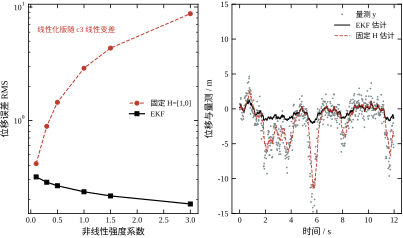
两个现象值得说。
第一，固定 H 不是“慢慢变差”，是过某个摆幅就整段崩。c_3=0.1 时只差 40\%，c_3=0.5 就差 6.4 倍，c_3=1.5 差 23.8 倍，c_3=3.0 差 56 倍。原因在正反馈：真实增益是 1+3c_3x_1^2，摆幅越大增益越大；滤波器却按常数 1 分配权重，估计被大摆幅踢偏一次，下一次新息更大，再踢得更偏。图 56-11 左子图是双对数纵轴，红线（固定 H）是直线上升，黑线（EKF）反而缓降。
第二，EKF 的误差随 c_3 增大而变小（0.3152 降到 0.1793）。这不合直觉，但有解释：量测曲线越陡，同样的量测噪声里含的状态信息越多，等效信噪比提高。这是非线性送的红利，不是 EKF 的功劳。图 56-11 右子图能看到，c_3=1.5 时 EKF 的估计紧紧咬住量测的包络，而固定 H 的估计被甩到 \pm15 之外。
EKF 的麻烦在于雅可比。h 有分段、有不可导点、有高维时，雅可比难写还容易错。UKF 换一条路：不线性化函数，而是取 2n+1 个 sigma 点，让它们过一遍真函数，再用加权统计还原均值与协方差。
报告 13 用 50 次蒙特卡洛比了三种做法（每段 2000 拍）：
\begin{array}{c|ccc} c_3 & \text{固定}\ H & \text{EKF} & \text{UKF}\\ \hline 1.5 & 4.9529 & 0.2131 & 0.2085\\ 5.0 & 16.6078 & 0.1590 & 0.1519\\ 10.0 & 33.2683 & 0.1325 & 0.1248 \end{array} \tag{56-45}
UKF 比 EKF 好 2.2\%、4.5\%、5.8\%——优势随非线性变强而变大，但始终停在个位数百分比，不会出现数量级的差距。这与理论预期一致：两者都是二阶精度，差别只在三阶以上的项。
所以选 UKF 的判据不是“非线性强”，而是“雅可比难写或不连续”。若 h 是光滑的解析式，EKF 更便宜（每拍一次矩阵乘），没理由换。若 h 里有查表、有饱和、有开关，雅可比根本写不出来，UKF 的 2n+1 次函数求值反而简单。本章对象 n=2，UKF 每拍算 5 次 h，代价可以忽略；若 n=20，就是 41 次，这时要算清楚 CPU 余量。
(56-8) 第二式 P^+=(I-LC)P^- 在数学上没问题，在浮点里有问题：I-LC 不对称，每乘一次就制造一点不对称；P 应该对称正定，实际会慢慢失去对称性，极端时失去正定性，滤波器发散。
Joseph 形式换一个写法：
P^+=(I-LC)P^-(I-LC)^{\mathsf T}+LVL^{\mathsf T} \tag{56-46}
两项各自对称半正定，加起来必然对称半正定，舍入误差只能在“正”的方向上加。报告 14 从 P_0=10^6I 起步跑 5000 步，每拍做完整的量测更新与时间更新：
\begin{array}{c|ccc} \text{精度} & \text{形式} & \text{最大不对称量} & \text{末态迹}\\ \hline \text{双精度} & \text{标准} & 3.638\times10^{-12} & 0.322950\\ \text{双精度} & \text{Joseph} & 3.638\times10^{-12} & 0.322950\\ \text{单精度} & \text{标准} & 8.087\times10^{-4} & 0.322950\\ \text{单精度} & \text{Joseph} & 1.907\times10^{-6} & 0.322950 \end{array} \tag{56-47}
双精度下两者分不出高下，都是 3.6\times10^{-12}；换到单精度，标准式的不对称跳到 8.1\times10^{-4}，Joseph 只有 1.9\times10^{-6}，差 400 倍。最小特征值两者都停在 0.145，末态迹都回到 0.322950——这 5000 步里没有真的发散。
所以“标准式必崩”这句话言过其实。诚实地说：标准式在双精度、良态问题上够用；在单精度、定点、或 V 极小（S 病态）时，Joseph 的 400 倍余量就是生与死。工程上的做法是：只要算力允许，一律用 Joseph；算力紧时至少每 100 拍强制对称化一次（P\leftarrow(P+P^{\mathsf T})/2）。
W 与 V 都是猜的，猜错了性能就掉。自适应滤波的思路是让滤波器边跑边估。报告 11 的协方差匹配是最简单的一种：
\hat V_k=\frac{1}{M}\sum_{i=k-M+1}^{k}\big(\nu_i^2-\mathrm{tr}(CP^-_iC^{\mathsf T})\big) \tag{56-48}
用一段滑动窗口内的新息平方减去模型预测的部分，剩下的就是量测噪声。M 取 50 到 200 拍，太短噪声大，太长跟不上变化。同理可以反估 W：把新息协方差的超出部分归给过程噪声。
另一类做法是“渐消记忆”：每拍把 P^- 乘一个略大于 1 的因子 \lambda^{-1}（\lambda 取 0.95 到 0.99），强迫滤波器保持一点“不自信”。这在模型缓慢漂移时特别有效——它等价于人为放大 W，但不需要知道 W 是多少。代价是稳态精度略降，因为滤波器永远保留一点噪声。
自适应有一个陷阱：W 与 V 只有一个自由度（§56.7.3），同时估两个必然不唯一。工程上的做法是固定 V（传感器手册）、只估 W，或者反过来。两个都估，会得到一组“自洽但漂移”的参数，跑几小时后可能跑到荒谬的值。
滤波器只用当前及以前的量测，这是因果约束。若数据是离线的（整段轨迹复盘、参数辨识、事故分析），可以用 RTS 平滑，把未来的量测也用上。算法是从最后一拍往回递推：
\hat x^s_k=\hat x^+_k+G_k\big(\hat x^s_{k+1}-A_d\hat x^+_k\big),\qquad G_k=P^+_kA_d^{\mathsf T}(P^-_{k+1})^{-1} \tag{56-49}
报告 18 的结果是：滤波的位移误差 RMS 0.3662，平滑后 0.2705，压掉 26.1\%；同一时刻（中段）的协方差迹从 0.3033 降到 0.2425。四分之一多一点，不算多，因为本章的过程噪声不小，未来量测能提供的信息有限。若 W 很小、模型很准，平滑的收益会大得多。
平滑对实时控制没有帮助——控制只能用当前之前的信息。它的用处是离线分析：看某次抖动到底是量测坏了还是模型错了，平滑后的轨迹能把两者分开。代价是要存下每一拍的 P^+、P^- 与 \hat x^+，内存是滤波的 3 倍。
§56.6.5 说过，LQG 会吃掉 LQR 的裕度。LTR（Loop Transfer Recovery）是补救办法：在对象输入端注入强度为 W_{\mathrm{ltr}}=qBB^{\mathsf T} 的虚拟过程噪声，把 q 调大，滤波器的 L 会越来越大，闭环传函逐渐逼近“只有 K 没有 L”的情形，LQR 的 60^\circ 裕度就回来了。
代价有两个。第一，L 变大意味着量测噪声被放大，控制量毛刺变大，执行器磨损加快。第二，q\to\infty 时 L 趋于无穷，数值上不可实现，只能取有限值，裕度也就只能恢复一部分。工程上的折中是取 q 使恢复后的相位裕度到 40^\circ 左右，留 20^\circ 给未建模动态。
LTR 有一个前提：对象是最小相位的。若对象有右半平面零点，恢复过程会把零点的不稳定也一起放大，越恢复越糟。这时只能走第三条路——H_\infty 或 \mu 综合，把裕度直接写成约束。那是第57章的内容。
报告 14 比较的是“标准式”与“Joseph 形式”，两者传播的都是协方差矩阵本身。还有第三条路：不传播 P，传播它的 Cholesky 因子 S（P=SS^{\mathsf T}），每拍用正交变换把先验阵列化成三角阵。
好处是结构性的。P 的条件数是 \kappa，S 的条件数是 \sqrt{\kappa}——同样一个病态问题，平方根形式少用一半的指数范围。定点或单精度实现里，这一半往往就是“能跑”与“溢出”的分界。更关键的是，SS^{\mathsf T} 永远半正定，不管舍入怎么错，滤波器都不可能算出负方差；而标准式与 Joseph 形式都只是“尽量”保持对称正定，极端情况下仍会跑出负特征值。
代价是运算量：一次量测更新要做 O(n^3) 的正交化（Householder 或 Givens），大约是标准式的两倍。n=2 时无所谓，n=20 的组合导航里就要算清楚预算。
选型可以按一句话定：双精度、n 小、开发期，用 Joseph 形式图省事；单精度或定点、n 大、要长期无人值守，用平方根形式。 报告 14 的单精度对比（8.087\times10^{-4} 对 1.907\times10^{-6}）说明 Joseph 已经很能打，平方根形式是在它之上再留一层余量。
前面所有讨论都假设噪声是高斯的。现场最常见的偏离不是非高斯，而是偶尔的野值：传感器被撞一下、通信校验漏了一位、A/D 被电机干扰打了一个尖峰。一个 10\sigma 的野值足以让估计跳出去，而它可能几十秒才来一次。
最简单的抗差做法是新息限幅：算完新息后，若 |\nu_k|>k\sqrt{S_k}，就把它夹到 k\sqrt{S_k} 再乘增益。k 取 3 时，高斯假设下被误夹的概率是 0.27\%（\chi^2_1>9 的尾概率），对正常数据几乎没有损失；而野值的影响被压到 3\sigma 的水平。
更讲究一点用 Huber 权：小新息原样通过，大新息按 k\sigma/|\nu| 的比例缩小。它与限幅的区别在于连续——限幅在门限处有一个折角，闭环里可能激出小极限环；Huber 权是光滑的。工程上两者差别不大，代码量也差不多，选哪个看团队习惯。
比抗差更重要的是分清“野值”与“模型错了”。野值是孤立的、一次性的，限幅就够；模型错了是持续的、有规律的，这时限幅只会掩盖问题——报告 10 里 W 低估一千倍造成的误差常驻 0.75 到 0.93，如果配上限幅，误差会被压回去一段时间，看起来“正常”了，实际越走越偏。诊断的办法还是看 NIS 的长期均值：1.84 与 1.62 这种持续大于 1 的读数，说明是结构问题，不是野值。
EKF 的公式只有几行，但实现里有三处反复出错的细节，每一处都能让滤波器“看起来在跑、实际在错”。
第一，线性化点。 雅可比必须在当前拍的先验估计 \hat x^- 处求，而且每拍重算。报告 12 里“固定 H”那一列就是反例：它只在标称点线性化一次，之后一直用同一个 H。c_3=0.1 时误差还只有 0.4423，c_3=3.0 时涨到 10.0625——因为真实增益是 1+3c_3x_1^2，摆幅一大，常数 H 就完全不对了。
第二，更新用哪个点。 状态更新与协方差更新必须用同一个线性化点。常见错误是先算 \hat x^+、再用 \hat x^+ 求 H 去更新 P，这等于“用后验线性化”，在没有迭代的情况下会引入偏差。正确做法是先算 H(\hat x^-)、L=P^-H^{\mathsf T}S^{-1}，然后同时更新 \hat x 与 P。若确实想用后验点，那就老老实实做迭代 EKF：更新完在 \hat x^+ 处重算 H，再更新一次，重复两三拍。
第三，角度的绕圈。 只要状态里有角度，新息就必须归一化到 (-\pi,\pi]。179^\circ 与 -179^\circ 的真实差是 2^\circ，直接相减得 358^\circ，滤波器会以为出了大故障，用最大增益猛拉一下，把估计甩到反方向。这个 bug 在陀螺、罗盘、机械臂关节上极常见，而且只在跨越 \pm180^\circ 的瞬间出现，测试时很容易漏掉。
三条都不是数学问题，是工程细节。它们的共同点是：错了以后滤波器仍然收敛、仍然给出“合理”的曲线，只是误差比应该的大几倍。所以 EKF 上线前一定要有一组“已知真值”的对比数据，否则查不出来。
§56.2.10 说增益序列可以预先算成表。真这么做时，第一个问题是：表要多密？
报告 23 做的就是这个实验：在 \log V 上等间隔取点，V 从 0.01 扫到 100，相邻点之间对 L 的两个分量做线性插值，再与精确解比：
\begin{array}{c|c|c} \text{表长} & \text{最大相对误差} & \text{平均相对误差}\\ \hline 9 & 17.0\% & 6.9\%\\ 17 & 4.6\% & 1.7\%\\ 33 & 1.45\% & 0.43\% \end{array} \tag{56-55}
表长 9 就是“每十倍两个点”，看着已经不少，实际误差到 17\%——在 V 接近上界 100 的那一段（V=60 处 16.9\%）。原因是 L 随 V 的衰减不是直线，越到高 V 越弯，等距插值在弯曲处必然偏低。每十倍四个点（表长 17）把最大误差压到 4.6\%，八个点（表长 33）压到 1.45\%。三张表的内存分别是 9\times2、17\times2、33\times2 个浮点数，都是几百字节的量级。
这里有个更省的办法：不要在 L 上插值，在 \log L 上插值。报告 5 量过 \Sigma_{11}\propto V^{0.25}，而 L_1=\Sigma_{11}/V\propto V^{-0.75}，所以 \log L_1 对 \log V 整体接近一条斜率 -0.75 的直线（逐段斜率在 -0.53 到 -0.98 之间摆动）；同样 9 个点，\log-\log 插值的相对误差只有 0.2\% 到 0.5\%（报告 23）。麻烦在 L_2 会变号（报告 4 里 W 扫描时翻过两次），对数插值遇到零点和负值就失效，得用“带符号的对数”或分段处理。所以工程上的取舍是：L 全为正时用 \log-\log 插值，九个点就够；有变号分量时退回线性插值，表长加倍。 前者省内存，后者省心。
第二个问题是：什么时候可以查表，什么时候必须在线算？判据是 L 是否已经收敛。报告 2 说从 P_0=10^{6}I 出发要 64 步收敛，这 64 步内 L 在变，查表会用一个“将来的”增益，开头几十拍的瞬态就不对了。做法是前 100 拍在线算（或存一段启动表），收敛后切成稳态表。若工况会让 W、V 缓慢漂移（温度、磨损），表还要按工况分段，段与段之间做增益淡入，否则切换瞬间控制量会跳。
理论上的 V 是“量测噪声的方差”，现场拿到的往往是“含对象振动的方差”。两者差很多，直接用手册值会把滤波器调得过保守。
一个可操作的流程是三步。第一步，设备断电或锁定，采 30 秒 y，算样本方差 V_0——这是纯传感器噪声。第二步，设备正常运行，采 30 秒 y 与 u，用报告 11 的协方差匹配反估 V_1。第三步，若 V_1 比 V_0 大很多（比如十倍），说明“视在噪声”主要来自未建模的振动，不该全算进 V，而应该分一部分给 W。
怎么分？看新息的频谱。若新息在某个频率上有尖峰，那是未建模的模态，应该把 W 在那个方向上加大（W 可以不是单位阵，哪个状态抖就把对应的对角元加大）；若新息是宽带的，那是传感器噪声，归 V。这一步需要一点频谱分析的工具，但比盲调有效得多。
单片机上的卡尔曼滤波常用定点或单精度，这时数值问题会放大。三条规矩能挡住大部分坑。
第一，状态与协方差用不同的标度。状态是物理量，量级可能从 10^{-3} 到 10^{3}；协方差是平方量，量级跨得更开。若用同一套定点标度，协方差的小分量会被截断成零，滤波器失去方向性。做法是给 P 单独定标，或者干脆用浮点（现在的 Cortex-M4F 以上都有 FPU，没必要省这点）。
第二，用 Joseph 形式，并且每拍强制对称化。报告 14 的 400 倍差距在单精度下是实打实的，而对称化只多两次加法。
第三，除法改成乘倒数，但倒数要限幅。S=CP^-C^{\mathsf T}+V 可能很小（V 小、P^- 小），倒数会溢出。工程上给 S 设一个下限（比如 10^{-6}），超过就把 L 截断，相当于“这一拍不更新”。
报告 19 的数字在 §56.6.6 已经给过：丢一半量测，位移误差从 0.3532 涨到 0.4474，多 27\%。这个结果对稳定对象成立，对不稳定对象完全不成立，所以先判断对象类型再决定策略。
对稳定对象，最简单的策略是“没有新量测就不更新”，只做预测步。代码上就是判断量测时间戳，若与上一拍相同就跳过更新。这样做的代价是协方差每拍都涨（因为没有量测收缩），跑久了滤波器会变得过度保守；解决办法是给 P 设上限，或者每 N 拍强制注入一次量测。
对不稳定对象，必须在丢包时切换策略：要么保持上一次控制量（零阶保持），要么用模型预测值硬顶，要么直接切到安全模式（断电、抱闸）。三种都行，但不能“什么都不做”——不稳定对象不会等你。
延迟比丢包麻烦。若延迟固定为 d 拍，正确做法是把状态增广成 [x_k,\;x_{k-1},\dots,x_{k-d}]，量测对应的是延迟后的那个分量。若延迟随机，只能用“延迟补偿”：用当前估计往前推 d 拍，推的时候把 P 也往前推，推完再更新。后者的精度差一些，但实现简单。
乱序指量测到达的顺序与时间戳不一致。这在以太网、CAN 总线上常见。处理办法是按时间戳排序后再送进滤波器，不要按到达顺序。若乱序严重到无法排序，说明通信层有问题，先去修通信，不要指望滤波器能救。
滤波器自带的两个量可以直接做故障检测：新息与 NIS。
NIS 门限：单路量测下 NIS 服从 \chi^2_1 分布，99\% 分位点是 6.63。连续 3 拍超过这个值，就认为量测异常。这个判据很灵敏，报告 9 里 V 低估 25 倍时 NIS 均值 16.68，一拍就能抓。
卡死判据：若连续 N 拍新息的绝对值都小于某个阈值（比如 0.01 倍量程），而控制量在变，说明传感器输出卡住了。这时应该把 V 临时调到极大（等于不信这个传感器），让滤波器靠模型跑，同时报警。
两个判据都要防误报。设备启动、切换工况、大扰动时 NIS 会短暂超标，所以要用“连续 N 拍”而不是“单拍”。N 取 3 到 5，配合一个短时间的滞回，基本够用。
冷启动时 P_0 该给多大？报告 2 的答案是“给大点没坏处”：从 10^{-6}I 到 10^{6}I，稳态都是 0.322950，收敛步数只从 33 变到 64。所以工程上直接给 P_0=10^{4}I 或更大，让滤波器自己收。
但 P_0 大有一个副作用：前几拍增益接近 1，估计几乎完全跟着量测走。若第一拍量测恰好有野值，估计会被拉飞。解决办法是前几拍做“野值门限”——新息超过 5\sigma 就丢弃，等滤波器稳定后再放宽。
重启（比如故障恢复后）要处理“无扰切换”。若控制器一直在跑，而滤波器重启，\hat x 会从零开始，控制量会跳变。做法是重启时用当前控制量反推一个初值，或者让控制器在滤波器收敛前保持上一拍输出（bumpless transfer）。这一点在第44章 PID 的无扰切换里也讨论过，思路一样。
本章 n=2、m=1，一次完整的预测加更新大约是 50 次浮点乘加。T_s=0.02 s 时占用不到 1\% 的 CPU，随便什么芯片都够。
规模上去就不一样了。n=20、m=5 时，一次更新是 O(n^2m+n^3)，约 10^{4} 次运算；若 T_s=1 ms，每秒 10^{7} 次运算，需要 100 MHz 以上的 FPU。这时要做三件事：把 A_d 的稀疏性用上（很多状态之间没有耦合）、把增益预先算成表（若 P 收敛就不在线解 Riccati）、把更新与预测分到不同优先级的中断里（预测可以慢，更新必须准时）。
调度上有一个常见错误：把滤波器放在低优先级任务里，控制放在高优先级。结果是控制用了旧的 \hat x，等效于引入延迟。正确做法是“采样—滤波—控制”在同一次中断里顺序执行，或者用双缓冲保证控制拿到的永远是最新估计。
§56.10.2 说“给 P 单独定标”，具体要多少位，可以算出来。
本章的协方差跨度是：起步 P_0=10^6（若按 10^4I 则 10^4），稳态最小特征值 0.1831。取 \log_2：10^6\approx2^{19.9}，0.1831\approx2^{-2.45}。要用定点表示这两个极值，整数部分需要 20 位，小数部分至少要 10 位才能分辨 10^{-3} 量级的变化——合计 30 位。32 位有符号整数只有 31 位有效，Q20.10 刚好卡进去，一点余量都没有。
这就是为什么“定点实现卡尔曼”在工程上总是出事。三条出路：一是分阶段换标度，前 100 拍用 Q20.10、之后切到 Q10.20，切换点靠拍数或迹的阈值判定；二是把 P 归一化——每拍除以稳态迹 0.322950，用无量纲的 P 递推，出结果再乘回去；三是直接上浮点。Cortex-M4F 之后 FPU 基本普及，本章 n=2 的计算量在 72 MHz 上不到 20 微秒，实在没有理由为省这点算力去啃定点。
若必须定点，还有一条硬规矩：每拍强制对称化并检查最小特征值。做法是把 P 写成 (P+P^{\mathsf T})/2，再对 \det(P) 设一个下限（本章稳态行列式 0.151218，可以取下限 10^{-4}）。一旦触发下限，说明这一拍已经不可信，应该跳过更新或者复位滤波器，而不是硬算下去。
现场的噪声参数不是“读手册”能得到的，要走一遍标定。四步，每步都有明确的产出。
第一步，设计激励。 目标是让对象在“有代表性的工作范围”里动起来，同时不触发饱和与非线性。阶跃适合看响应，伪随机或扫频适合看频段。幅值的选择有个窍门：如果怀疑有非线性（报告 12 那种），必须用大摆幅激励，否则永远测不出来；但大摆幅又要确认执行器没饱和，否则记录到的是“限幅后的对象”。
第二步，记录。 至少要存四列：时间戳、量测 y、指令 u、实际施加 u。第四列常被漏掉，而它正是 §56.6.8 那条规矩的依据。采样必须等间隔；若用事件触发，先把时间轴重采样成等间隔，否则所有统计量都会偏。
第三步，反估。 分两段用：静置段（设备不动）算 V，因为此时 y 的波动只有传感器噪声；运行段算 W，用报告 11 的协方差匹配，或者用“已知激励下的响应对比”。若只有一路量测，W 的可辨识性很差（报告 9 里 W 低估 100 倍仍然白），这时宁可保守取大一点，让滤波器多信量测。
第四步，回归验证。 把反估出的 (W,V) 代回滤波器，用同一段数据重跑，比较三样：E[NIS] 是否接近 1、新息自相关是否在本底、状态误差 RMS 是否与 \sqrt{\Sigma_{11}} 同量级。三样都过，标定结束；有一样不过，回到第三步看是哪一段数据的问题。
四步里最容易被跳过的是第四步。跳过它的后果是：参数看起来很合理，一上机就发现滤波器“太自信”或“太迟钝”，然后又回到盲调。
§56.10.3 讲了丢包、延迟、乱序各自怎么处理，但没回答一个更实际的问题：延迟几拍才算严重？量测少采几拍会不会毁掉性能？这两个问题可以用本章的闭环仿真直接量出来。
报告 21 的做法是拿标称的 K、L（T_s=0.02 s，跑 1500 拍，取后半段统计，20 组随机种子平均），只改量测的用法：延迟 d 拍时用 d 拍之前那个 y 去算新息，其余照常。结果如下。
\begin{array}{c|c|c|c} \text{延迟/拍} & \text{位移 RMS} & \text{速度 RMS} & \text{相对无延迟}\\ \hline 0 & 0.719205 & 0.546682 & 1.0000\\ 1 & 0.734021 & 0.540427 & 1.0206\\ 2 & 0.747318 & 0.535221 & 1.0391\\ 5 & 0.786359 & 0.522279 & 1.0934\\ 10 & 0.849236 & 0.513546 & 1.1808 \end{array} \tag{56-51}
延迟 2 拍（0.04 s）多 3.9\%，延迟 10 拍（0.2 s）多 18.1\%。这几行数字几乎落在一条直线上，可以用一条粗规则概括：
\frac{\Delta\mathrm{RMS}}{\mathrm{RMS}_0}\approx\frac{1}{2}\omega_o\tau_d \tag{56-52}
其中 \omega_o=1.836 是观测器最快的极点模，\tau_d=dT_s。代进去核一遍：d=2 时右端 0.0367，实测 0.0391；d=5 时 0.0918 对 0.0934；d=10 时 0.1836 对 0.1808，三处偏差都在 5\% 以内。这条规则的价值在于它给出了一个可用的界：若要求延迟带来的误差增量不超过 10\%，就要求 \omega_o\tau_d\le0.2。本章 \omega_o=1.836，也就是 \tau_d\le0.11 s；采样周期 0.02 s，允许延迟五拍半。
注意速度那一列是往下走的：0.546682 降到 0.513546，少了 6\%。这不是笔误。迟到的量测与新息之间已经隔了几拍，等效于对新息做了一次低通，速度估计反而更平；位移估计则被“过时的位置”拖住，误差变大。一个变好、一个变坏，总量（迹）基本不变——延迟不会凭空制造误差，它只是把误差从速度挪到位置。这条对判断故障很有用：若现场发现速度估计异常平滑而位置总是慢半拍，先查时间戳，不要先调 W。
再看降采样。同样条件下，每 2、4、8 拍才更新一次，其余拍只做预测：位移 RMS 依次是 0.724064、0.730109、0.746018，相对每拍更新只多 0.68\%、1.52\%、3.73\%。八倍的量测间隔只换来 3.7\% 的误差增长，原因是这个对象的预测很准——A 已知、W 也对，预测一步的误差本来就小。
两件事放在一起，得到一条容易被忽略的结论：少采不可怕，晚到才可怕。 少采的损失靠模型补，晚到的损失没有东西能补，因为模型推不出“还没发生的量测”。所以工程上优先保证时间戳对齐，其次才是提高采样率。传感器再快，若它和控制器各跑各的时钟，累积几个毫秒的相位差就等于凭空加了几拍延迟。
多速率系统还要多一条规矩：控制器与滤波器不要各用各的周期。若控制 T_s=0.02 s、量测 0.04 s，正确做法是滤波器仍在 0.02 s 的节拍上跑，偶数拍更新、奇数拍只预测；而不是让滤波器跟着量测跑到 0.04 s，再把结果零阶保持给控制器。后者的等效延迟是 0.02 到 0.04 s，按 (56-52) 就是 2\% 到 4\% 的额外误差，白送的。
第一，它是真正“最优”的，不是“看起来合理”的。 在所有线性、无偏、只用过去量测的估计器里，卡尔曼滤波的均方误差最小，这个结论有严格证明，不依赖参数整定。第54章的极点配置也给了一个“能用”的观测器，但它不最优，而且“多快算合适”要靠手感。卡尔曼把这件事交给噪声统计。
第二，它把两个互相冲突的愿望显式地兑换。 信模型还是信量测，在极点配置里是一个模糊的定性判断；在卡尔曼里是 W/V 一个比值。比值定了，增益就定了，性能也就定了，中间没有黑箱。
第三，协方差递推与量测无关，可以离线算。 报告 2 显示收敛只花 33 到 64 步，稳态与初值无关；这意味着增益序列可以预先算成表，在线只做乘加。这对算力紧张的嵌入式系统很关键。
第四，它与 LQR 对偶，一套代码两用。 报告 1 的对偶残差 1.971\times10^{-15}、增益差 0，说明两个问题在数学上是同一个。学一次 Riccati，控制器与滤波器都能写。
第一，它信模型。 模型错了，滤波器不会报警，只会“自信地错”。报告 10 的刚度错一倍，位移误差只涨 1\%、\mathrm{E}[\mathrm{NIS}] 仍是 0.99，从统计量上完全看不出来。这是卡尔曼滤波最大的软肋，也是 §56.9 那些改进手段存在的理由。
第二，它假设高斯。 高斯假设下“均值+协方差”就是全部信息；若噪声是重尾的（有野值），卡尔曼会被野值拉飞。工程上的补救是加野值门限，或者换粒子滤波——后者计算量高两个数量级。
第三，它假设线性。 非线性要靠 EKF/UKF 近似，而近似会失效。报告 12 里固定线性化在 c_3=3.0 时误差 10.0625，是 EKF 的 56 倍，这不是“稍微差一点”，是整段崩。
第四，它不管约束。 卡尔曼给的 \hat x 可能超出物理范围（比如位移超过行程、速度超过极限），LQG 给的控制量也可能超执行器上限。约束必须外挂（饱和、抗饱和、或者换 MPC，见第58章）。
第五，分离原理只保极点，不保裕度。 §56.6.5 已经说过，LQG 的相位裕度可以掉到没有穿越。要根据裕度设计，得走 LTR 或 H_\infty（第57章）。
第六，参数仍然要人给。 W、V 不是从对象方程推出来的，是估的、试的、反推的。§56.8 给了一套流程，但流程本身也要经验。所谓“卡尔曼不需要调参”是误解——它只是把“摆极点”换成了“估噪声”，难度没消失，只是换了形态。
PID（第44章、第106章）不需要模型，一条回路三个参数，调起来快。它的短板是“看不见内部状态”，对多变量、强耦合、有约束的场合力不从心。本章的 LQG 在这些场合有优势，代价是要模型、要噪声统计、要算矩阵。
MPC（第58章、第80章）把约束显式写进优化，处理饱和、速率限制、多变量协调比 LQG 强。它的代价是每拍要在线解一个优化问题，算力需求高一两个数量级。选择的分界大致是：约束是“偶尔碰到”还是“经常起作用”。偶尔碰到，LQG 加饱和就够了；经常起作用，上 MPC。
Smith 预估器（第47章、第107章）专治纯滞后，LQG 对纯滞后没有特别办法（只能把延迟增广进状态）。若对象的主导困难是滞后，先看 Smith；若主导困难是噪声与多变量耦合，先看 LQG。
第57章的 H_\infty 与 \mu 综合，处理的是“模型不确定但有界”的情形。LQG 假设噪声统计已知，H_\infty 假设扰动有界但分布未知，两者是互补的视角：前者赌“平均表现”，后者赌“最坏情况”。
有四种情形，用了反而更糟。
第一，模型完全不可信。比如对象是强非线性、时变的，或者根本没做过辨识。这时卡尔曼的“最优”是建立在错误模型上的最优，不如直接用 PID 加滤波。
第二，量测极少且不可靠。只有一路开关量、或者传感器经常卡死，滤波器的校正项基本失效，\hat x 会退化成“模型外推”，误差随时间线性增长。这时应该先解决传感，而不是换算法。
第三，算力或开发周期不允许。卡尔曼要矩阵库、要 Riccati 求解器、要调试工具，一套下来不是一周的事。若项目只有两个月、团队没做过状态空间，PID 是更稳的选择。
第四，安全关键且无法验证。滤波器失效的模式很隐蔽（估计慢慢偏、协方差自洽），不像饱和那样一眼可见。若没有在线监控（NIS、残差、冗余比对），不建议把它放在唯一的安全回路上。
\begin{array}{c|c|c} \text{情形} & \text{首选} & \text{理由}\\ \hline \text{单回路、模型粗、要求不高} & \mathrm{PID} & \text{无需模型，调试快}\\ \text{多变量、状态不可全测} & \mathrm{LQG} & \text{估计与反馈一体}\\ \text{约束经常起作用} & \mathrm{MPC} & \text{约束显式入优化}\\ \text{主导困难是纯滞后} & \mathrm{Smith} & \text{专门补偿滞后}\\ \text{模型不确定但有界} & H_\infty/\mu & \text{按最坏情况设计}\\ \text{非线性强、量测非线性} & \mathrm{EKF/UKF} & \text{局部线性化或 sigma 点} \end{array} \tag{56-50}
这张表不是绝对的。实际系统往往是组合：LQG 做基础回路，外面套一层 MPC 处理约束，再用 H_\infty 验一遍鲁棒性。本章给的是其中一块积木，知道它的形状与边界，才知道该往哪儿放。
除了第54章的 Luenberger 观测器，还有两类常见的替代品，分工很清楚。
滑模观测器假设“扰动有界但不知分布”。它的做法是用一个开关项把估计误差强行压到一个滑模面上，有限时间收敛，对模型误差不敏感。代价是开关项带来的抖振，以及“误差上界”要靠经验给。卡尔曼给的是统计意义下的最优与协方差；滑模给的是确定性意义下的上界。若你的验收标准是“误差不超过 x mm”，滑模的话更直接；若标准是“平均误差最小”，卡尔曼更合适。
粒子滤波假设后验可能是多峰的。卡尔曼只维护均值与协方差，遇到双峰分布（比如机器人在两个相似位置之间“犹豫”）就会把一个峰抹平，给出一个谁都不像的均值。粒子滤波用几百到几千个样本表示整个分布，能处理多峰、强非线性、非高斯。代价是计算量高两到三个数量级，而且样本退化、重采样这些工程问题不比调参省心。报告 12 的三次非线性虽然让固定线性化崩了，但 EKF 处理得很好（误差 0.1793 到 0.3152），远没到需要粒子滤波的程度——非线性强度不是选粒子滤波的理由，多峰才是。
三者的判据可以压成一句话：噪声统计可信、后验近似单峰，用卡尔曼；不确定但有确定界、要求有限时间收敛，用滑模；后验多峰或强非线性，才考虑粒子滤波。
把上面的判据放到三个具体场合，看它怎么落地。
伺服位置环。 n=2（位置、速度），只测位置，T_s 在 1 到 10 ms。这就是本章的原型：连续解先算，W/V 按“观测器比闭环快两倍”取，T_s 满足 T_s\omega_o\le0.2。滤波器用定常增益（稳态 L 存成常数），在线只做两行乘加。这时 LQG 的收益主要在“速度不用差分”——§56.1.6 算过，差分的噪声是滤波器的 121.8 倍。
无人机姿态环。 n=6 到 9，陀螺与加速度计都在，T_s 在 1 到 4 ms。量测多、预测快，用协方差形式；因为姿态含角度，必须做新息绕圈（§56.9.9）。这个场合的难点不是算法，是量测模型（加速度计测的是比力，不是姿态），以及振动带来的高频噪声——后者要靠低通滤波或增大 V 处理，不能靠增大 W。
组合导航。 n=15 左右（位置、速度、姿态、零偏），量测来自 GNSS、里程计、视觉，更新频率参差且经常丢包。这里量测多、预测也快，但量测的“到达”是事件驱动的，用信息形式（§56.2.9）更自然：每来一路量测就加一项信息，没来的不加。丢包、乱序、延迟全在“什么时候加哪一项”里处理，比在协方差形式里改代码干净。
三个场景的共同点是：结构选对了，调参才有意义。 选错结构（比如在组合导航里用协方差形式硬扛异步量测），调参只能把问题掩盖一部分。
最后看一眼边界。若 C=I（所有状态都能测），且量测很准（V\to0），滤波器会退化成“直通”：L\to I、\hat x\to y，LQG 就变成了第55章的 LQR。
报告 8 的第一行就是这个退化情形：用真状态反馈、不加过程噪声，峰值 |u|=0.2361、RMS(u)=0.0208、2\% 调节 4.520 s，末值压到 1.72\times10^{-13}。这一行与第55章的 LQR 数字逐位相同，因为它算的就是 LQR。
这个退化有两层意义。第一层是验算：如果你的 LQG 在“全状态可测 + 无噪声”下跑不出 LQR 的结果，说明代码里某处多了或少了东西（最常见的是 B 的维度或预测/更新的顺序）。第二层是理解：LQG 相对 LQR 多付出的全部代价，都可以归到“状态不可测”这一件事上——报告 8 里末值从 1.72\times10^{-13} 变成 1.6097，就是这个代价的量化。
本章的对象是稳定的（极点 -1、-2），所以“传感器差一点就少信它一点”这条经验一直成立：报告 3 里 V 从 0.001 涨到 100，L_1 从 31.71 一路掉到 0.009932，几乎可以任意小。换成不稳定对象，这条经验就断了。
把刚度 k 从 2 改成 -2（负刚度弹簧），其余不变：A=\begin{bmatrix}0&1\\2&-3\end{bmatrix}，极点是 +0.561553 与 -3.561553，右边那枝必须靠反馈压住。同样的 Q=I、R=1 下，LQR 给出 K=[4.236068,\;1.297922]，比标称的 0.236068 大了一个数量级；闭环极点是 -0.605599 与 -3.692323。
报告 22 把 V 从 0.01 扫到 10^{6}：
\begin{array}{c|c|c} V & L & \text{观测器极点}\\ \hline 0.01 & [10.280509,\;2.844432] & -10.1626,\;-3.1179\\ 1 & [1.635010,\;0.836628] & -3.5939,\;-1.0411\\ 100 & [1.130338,\;0.633832] & -3.5619,\;-0.5685\\ 10^{6} & [1.123106,\;0.630683] & -3.5616,\;-0.5616 \end{array} \tag{56-53}
前三行还符合直觉：传感器越差，增益越小。但第四行露了底——V 再涨四个数量级，L 一位都不再动，停在 [1.123106,\;0.630683]，慢极点停在 -0.5616。这个数不是巧合，它正好是对象那个不稳定极点 +0.561553 关于虚轴的镜像；另一个极点 -3.5616 则原地不动。写成极限：
\lim_{V\to\infty}\mathrm{eig}(A-LC)=\{-0.561553,\;-3.561553\} \tag{56-54}
也就是说，不稳定对象给观测器设了一个带宽下限：最慢的那枝极点最多只能慢到“把不稳定极点镜像过来”的位置，再慢就发散。稳定对象没有这个约束，V\to\infty 时 L\to0，滤波器可以彻底躺平；不稳定对象不行，躺平就等于放弃。
这条结论在工程上有三个直接后果。第一，传感器再差也得用，误差大是小事，丢失量测是大事——所以 §56.10.3 说“不稳定对象丢包时必须切策略”，现在可以给出定量理由：稳定对象丢一半量测误差涨 27\%，不稳定对象丢的量测若让等效 V 趋于无穷，慢极点就顶在 -0.56 上，任何额外的延迟都会把它推进右半平面。第二，算力预算不能省在滤波器上，n=2 时无所谓，n=10 且有不稳定模态时，更新必须准时。第三，若确实只能拿到很差的数据，宁可加一路传感器把 V 压下来，也不要去调 W——W 只影响快慢，改不了那个镜像下限。
把 K 与 L 并起来，这个不稳定对象的 LQG 闭环极点是 -0.605599、-3.692323、-1.041115、-3.593895。四枝全在左半平面，分离原理照常成立；但最小阻尼的那一枝是 -0.6056，比标称对象的 -1.0000 慢，说明“不稳定”这件事已经从对象搬到了闭环上，裕度比第55章那个例子紧得多。
这一节只改了一个符号（k 由 2 变 -2），结论却与本章其余各节相反。所以拿到一个新对象，第一件事不是调 W、V，而是看它的极点有没有落在右半平面——那决定了后面所有经验是否还适用。
本章的数字来自两个文件：code/ch056_sim.py 产出二十三组报告，code/ch056_figs.py 产出十一张插图。前者只依赖 NumPy 与 SciPy，所有结果 print 到终端；后者不读缓存，全部通过 import ch056_sim as cs 重算。这样安排的目的是让正文里每个数都能在终端输出里逐字找到，而图上的曲线与正文的数字必然是同一份计算的产物。
ch056_figs.py 里 9 张数据图走 plot_styles.save()（同时导出 SVG 与 PDF），2 张框图走 block_styles 与 flow_styles。图内中文用纯文本、公式单独写 $...$，两者不混进同一字符串——这条规矩在 matplotlib 里是硬约束，混排会触发缺字形警告，中文变成方框。
控制器的求解器与第55章完全相同，一行没改：
def lqr_gain(Am, Bm, Q, R):
"""连续 LQR：返回 (K, P)。"""
P = solve_continuous_are(Am, Bm, Q, np.array([[R]]))
K = np.linalg.solve(np.array([[R]]), Bm.T @ P).flatten()
return K, P滤波器的稳态解只有三行，全部借对偶性：
def kf_ss(Am, Cm, W, V):
"""连续 Kalman 稳态解：返回 (L, Sigma)。
Sigma 解对偶 CARE：A Sigma + Sigma A' - Sigma C' V^-1 C Sigma + W = 0
"""
Sig = solve_continuous_are(Am.T, Cm.T, W, np.array([[V]]))
L = Sig @ Cm.T / V
return L, Sig注意 Am.T 与 Cm.T 的位置：把 A 转置、把 C 转置后，solve_continuous_are 解的正是滤波器的 Riccati 方程。这一行是本章代码里最省事的一行，也是最容易写错的一行——写成 solve_continuous_are(Am, Cm, ...) 也能跑出结果，但那个结果对应的是另一个问题，极点会在右半平面。
离散化用块矩阵指数，一次算出 A_d 与 B_d：
def zoh(Am, Bm, Ts):
"""零阶保持离散化。"""
n = Am.shape[0]
big = np.zeros((n + 1, n + 1))
big[:n, :n] = Am
big[:n, n:] = Bm
E = expm(big * Ts)
return E[:n, :n], E[:n, n:]过程噪声的离散协方差单独一个函数，梯形积分：
def disc_noise(Am, W, Ts, n=401):
"""过程噪声的离散协方差：int_0^Ts e^{At} W e^{A't} dt。"""
tau = np.linspace(0.0, Ts, n)
vals = np.array([expm(Am * t) @ W @ expm(Am.T * t) for t in tau])
return np.trapezoid(vals, tau, axis=0)401 点是折中：再少会让 W_d 的 (1,1) 元误差到 1\%，再多收益不明显。T_s 很大时（比如 3 s）应加密到 2001 点，因为被积函数在 \tau 上的变化更快。
离散稳态解把三件事串起来，并且明确规定：传进来的 V 已经是 V_d=V/T_s。
def dkf_ss(Am, Cm, W, V, Ts):
"""离散 Kalman 稳态解：返回 (L, Sigma_prior, A_d)。"""
Ad = expm(Am * Ts)
Wd = disc_noise(Am, W, Ts)
Sig = solve_discrete_are(Ad.T, Cm.T, Wd, np.array([[V]]))
S = Cm @ Sig @ Cm.T + V
L = Sig @ Cm.T @ np.linalg.inv(S)
return L, Sig, Adsimulate_lqg 是报告 8 的唯一来源，它有三个开关，分别控制“是否用真状态”、“是否加过程噪声”、“是否用真初值”。
def simulate_lqg(Ts, N, x0, xh0, Km, Lm, V, seed=1, ideal=False, W=None):
rng = np.random.default_rng(seed)
Ad, Bd = zoh(A, B, Ts)
Bd = Bd.reshape(-1)
if W is None:
root = np.zeros((2, 2)) # 无过程噪声
else:
Wd = disc_noise(A, W, Ts)
root = np.linalg.cholesky(Wd + 1e-15 * np.eye(2))
...
for k in range(N):
u = float(-(Km @ (x if ideal else xh)))
y = float((C @ x)[0]) + rng.normal(0.0, np.sqrt(V))
inn = y - float((C @ xh)[0])
if not ideal:
xh = xh + (Lm @ np.array([[inn]])).flatten()
x = Ad @ x + Bd * u + root @ rng.normal(0.0, 1.0, 2)
xh = Ad @ xh + Bd * u三个细节值得说。第一，u 在“理想”分支用真状态 x，在 LQG 分支用 \hat x，这是两种工况唯一的区别，其他代码完全一样——这样对比才公平。第二，W=None 时 root 是零矩阵，过程噪声整条路被掐断，用来跑“无噪声基准”。第三，\hat x 的更新在 x 之前，用的是当前拍的 y，因果性正确；若把顺序反过来，控制量会用到未来的量测。
cholesky 后面加了 10^{-15}I，是为了防止 W_d 因数值误差出现极小负特征值。这个补偿在 T_s 很小时必要，否则 cholesky 会报“矩阵不是正定”。
第一，B 的维度。 B @ K 在 K 是一维数组时会广播错。代码里统一写成 B @ K.reshape(1, -1)，得到 2\times2 的闭环矩阵；仿真循环里则先把 Bd 展平，再用 Bd * u 做标量乘。两种写法不能混。
第二，V 的口径。 dkf_ss 的 V 参数是每拍方差，不是连续谱密度。报告 6 的第一组故意传错（传 1 而不是 1/T_s），才得到 L_d/T_s 从 1.6148 涨到 31.2148 的发散列。这个参数名应该叫 Vd 更清楚，保留 V 是为了与公式对齐。
第三，初始协方差的传播。 滤波器起步时 P 是 P_0，每拍要先做量测更新（用 P^-），再做时间更新（得下一拍的 P^-）。若把两步写反，P 会收敛到错误的稳态（差一个量测更新），极点看起来正常，增益却偏大。检查办法是看稳态迹是否等于 dkf_ss 给出的 Sigma。
在项目根目录依次执行
"D:\Anaconda3\envs\py311\python.exe" code/ch056_sim.py
"D:\Anaconda3\envs\py311\python.exe" code/ch056_figs.py第一条约 40 秒，打印二十三组报告；第二条约 15 秒，在 figs/ch056/ 下生成 22 个文件（11 张 SVG、11 张 PDF）。
移植到嵌入式时，只需要三样东西：K 的两个常数、L 的两个常数、一个限幅。在线代码是
/* 预测：先算到临时变量，避免用被覆盖的旧值 */
xn[0] = Ad[0][0]*xh[0] + Ad[0][1]*xh[1] + Bd[0]*u;
xn[1] = Ad[1][0]*xh[0] + Ad[1][1]*xh[1] + Bd[1]*u;
xh[0] = xn[0];
xh[1] = xn[1];
/* 更新 */
innov = y - xh[0];
xh[0] += L[0]*innov;
xh[1] += L[1]*innov;
u = -(K[0]*xh[0] + K[1]*xh[1]);
if (u > UMAX) u = UMAX;
if (u < -UMAX) u = -UMAX;这里有一个隐藏的坑：若不引入 xn 而直接写 xh[0] = ...，第二行预测就会用到已经被改过的 xh[0]，结果悄悄算错。这个错误在仿真里不会出现（用的是 NumPy 的向量运算），在 C 里是每天都会发生的经典 bug，写完必须用一组已知数据手算核对。
Riccati 方程不需要在目标机上解。真正需要在线重解的只有两种情况：对象参数随工况变（用增益调度，离线算好几张表），或者要在线调权重。前者是常规做法，后者通常不值得——一张 2\times2 的表只占几十字节，而在线解 DARE 要几千行代码。
仿真跑通不等于能上机。按下面的顺序走，每一步都有一个可判定的通过条件。
第一步，换模型。 把 ch056_sim.py 里的 A、B、C 换成自己的，W、V 按 §56.10 的方法估。跑报告 1 与报告 7：对偶残差应在 10^{-12} 以下，极点并集差也应在同一量级。
第二步，定采样周期。 用连续解的最快极点算 T_s\omega_o，要求不超过 0.2。跑报告 15 的扫描，确认 T_s 处的 \mathrm{tr}(\Sigma_d) 与 L_d/T_s 偏离连续解都在 1\% 以内。
第三步，出常数表。 把 K、L 与 A_d、B_d 打印到 17 位有效数字。少打几位，定点或单精度下的闭环会与仿真差出可观的量——尤其 A_d 的元素接近 1 时。
第四步，写 C 并回放比对。 这是最关键的一步。用 Python 生成一段 y 与 u 序列（存成文本），喂给 C 实现，把 C 输出的 \hat x 与 Python 的输出逐拍比较。判据是最大绝对误差小于 10^{-9}（双精度）或 10^{-6}（单精度）。§56.12.5 里那个 xn 的别名 bug，只有在回放比对里才会暴露——在仿真里 NumPy 的向量运算替你把旧值保住了。
第五步，半实物。 控制器接真实传感器与执行器，但对象用仿真模型（或者机械上锁）。这一段的目的是抓“接口问题”：量纲（mm 还是 m）、符号（正方向）、时间戳对齐、限幅位置。判据是 C 的估计与仿真模型的真值误差与仿真一致。
第六步，闭环小增益起步。 先把 K 乘 0.3 上机，确认不振荡、不饱和，再逐步加到额定。每一步都看三样：控制量峰值、新息 NIS、估计与量测的差。任何一样异常就退回上一步。
六步里最容易被压缩掉的是第四、第五步，而这两步恰恰是唯一能抓住实现级错误的环节。仿真再漂亮，也证明不了 C 代码写对了。
本章的两个脚本是当模板写的，改自己的题只需要动三处。
第一处，对象。 ch056_sim.py 顶部的 A、B、C 三行换成你的模型。若是二阶机械系统，A=\begin{bmatrix}0&1\\-k/m&-c/m\end{bmatrix}，改 k、c、m 即可。若对象有纯积分（k=0），开环极点变成 0 与 -c/m，可检测性仍然成立（位移可测、速度由积分关系可观），但闭环极点会有一个靠近原点，2\% 调节时间变长。
第二处，噪声。 W 与 V 换成按 §56.10.1 估出的值。W 允许不是单位阵：哪个状态抖得厉害就把对应对角元加大。若你的量测不止一路，把 C 改成矩阵、V 改成矩阵，kf_ss 与 run_kf 都不用改——矩阵形式在代码里是通用的。
第三处，图与报告。 报告里的打印格式是按 2 状态写的，状态维数变了要调格式串；图里的 fig_03_ellipse 只对二阶有意义（协方差椭圆），高维要换成特征值谱或者几个主要方向的投影。
改完之后跑三个自检：报告 1 验对偶残差，报告 2 验初值无关，报告 7 验极点拼接。三个都过，说明模型替换没有破坏代码的数学结构，可以开始调参了。
有一条边界要说明：本章的 W 与 V 都假设互相独立、且与状态无关。若你的过程噪声与量测噪声相关（比如量测里含控制量的直接耦合），或者噪声强度随工况变（比如风速随速度变），本章的代码只能给一个近似，严格做法要么扩状态、要么用相关噪声的滤波方程。这两种都超出本章范围，遇到时需要另找资料。
“看起来对”不是验收标准。下面八条都能写成一句断言，跑不出绿就别往下走。每条后面括号里是本章的实测值，用来当量级参考，不是硬门限。
第一条，对偶残差。 把 L 代进对偶 CARE，残差应小于 10^{-10}（本章 1.971\times10^{-15}）。这一条抓的是“A、C 有没有转置错”。
第二条，对偶增益差。 用 (A^{\mathsf T},C^{\mathsf T},W,V) 跑 LQR，得到的 K 应与 L^{\mathsf T} 逐位相同（本章差 0）。第一条过而第二条不过，说明求解器返回的 P 没有对称化。
第三条，极点并集。 LQG 四阶极点应等于 K 闭环极点与 L 观测器极点的并集，误差在同一量级（本章 2.442\times10^{-15}）。这一条抓的是“分离原理有没有被代码破坏”，比如误把 L 用在了 A_d 而不是 A 上。
第四条，协方差合法。 \Sigma 对称、正定，行列式为正（本章迹 1.008918、行列式 0.151218）。若行列式变成负数，说明某一拍更新把 P 算坏了，先查有没有用 inv 而不是 solve。
第五条，标度不变。 (W,V) 同乘 \beta 后 L 不变（本章最大差 4.44\times10^{-16}），\Sigma 恰好乘 \beta。这条最便宜，却最能抓“量纲混用”——若你的代码里 V 忘了折算 T_s，这一条立刻红。
第六条，初值无关。 P_0 从 10^{-6}I 到 10^{6}I，稳态迹应一致到六位（本章都是 0.322950），收敛步数在几十拍量级（33 到 64）。若稳态随 P_0 变，说明递推里混进了与 P_0 有关的常数项。
第七条，新息自洽。 稳态段的 E[NIS] 在 0.9 到 1.1 之间，一阶自相关 |\rho_1|<2/\sqrt{N}。本章假设全对时 N=20000、E[NIS]=0.9773、\rho_1=-0.0121，门限 2/\sqrt{N}\approx0.0141，刚好在界内；V 低估 25 倍时 \rho_1 掉到 -0.2471，一眼可见。前六条都是代数检查，只有这一条在检验“噪声假设是否成立”。
第八条，退化对照。 把 C 换成 I、V 取极小、W 取零，输出应与第55章的 LQR 逐位一致（本章末值 1.72\times10^{-13}）。这一条抓的是“预测与更新的顺序”——顺序反了，退化情形照样收敛，但数字对不上。
八条里前六条是纯代数，不需要数据，几毫秒就能跑完，应该在每次改代码后自动跑；后两条需要一段仿真数据，放在提交前跑。这样分工的好处是：真正的数值 bug 在几毫秒内暴露，而统计性质的偏差不会被误判成代码错误。
还要提醒一句：八条全绿只说明“这套线性的、高斯的世界里自洽”，不说明模型对。§56.8.4 那个刚度错一倍的例子，八条断言一条都不会红，因为滤波器从头到尾都很“自信”。所以真正的验收还得加一条不属于代码的检查：拿一段独立工况的数据，把估计误差与真值（或高精度参考）比一次。代码能证明自己没写错，数据才能证明模型没错。